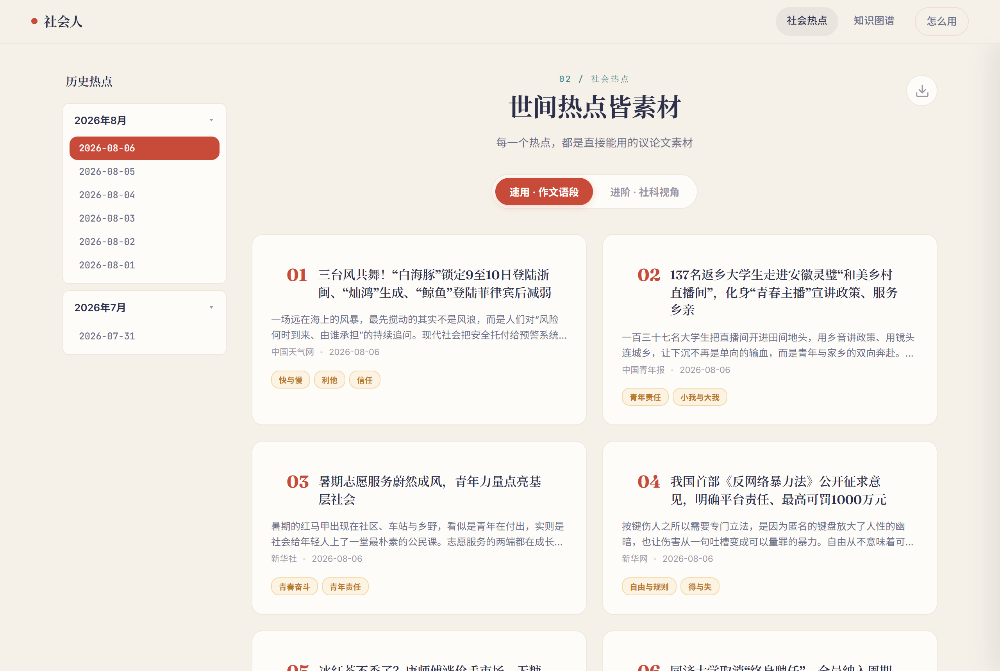
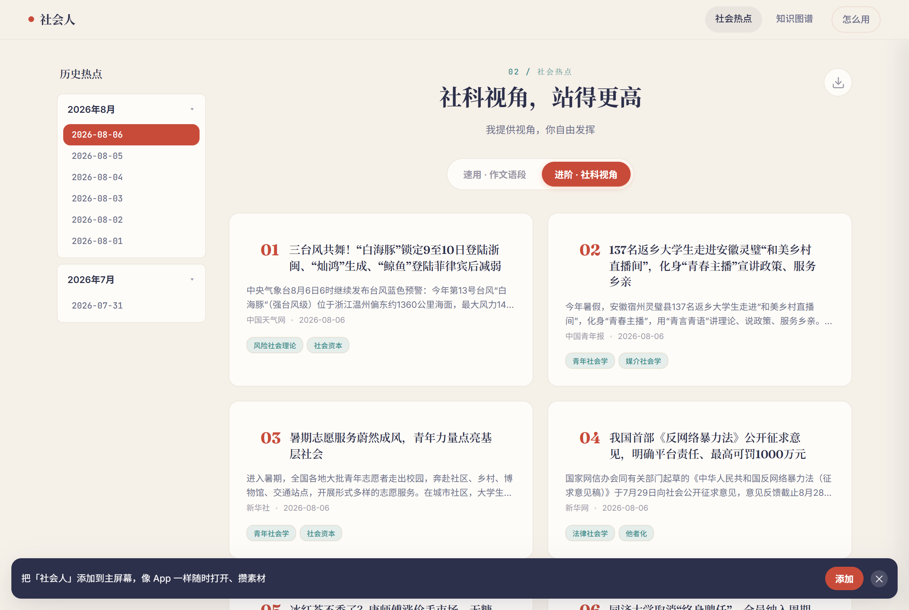
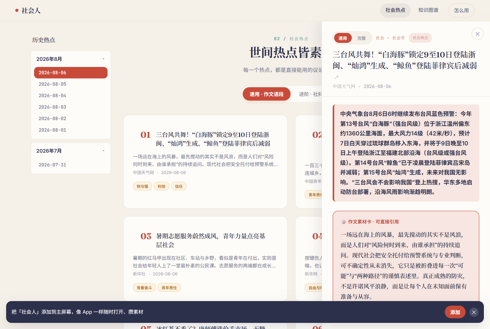
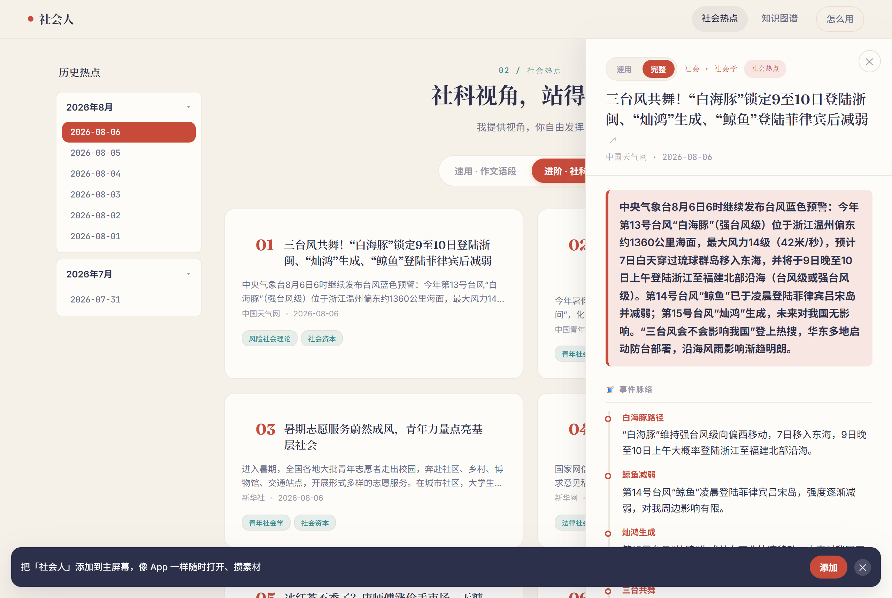
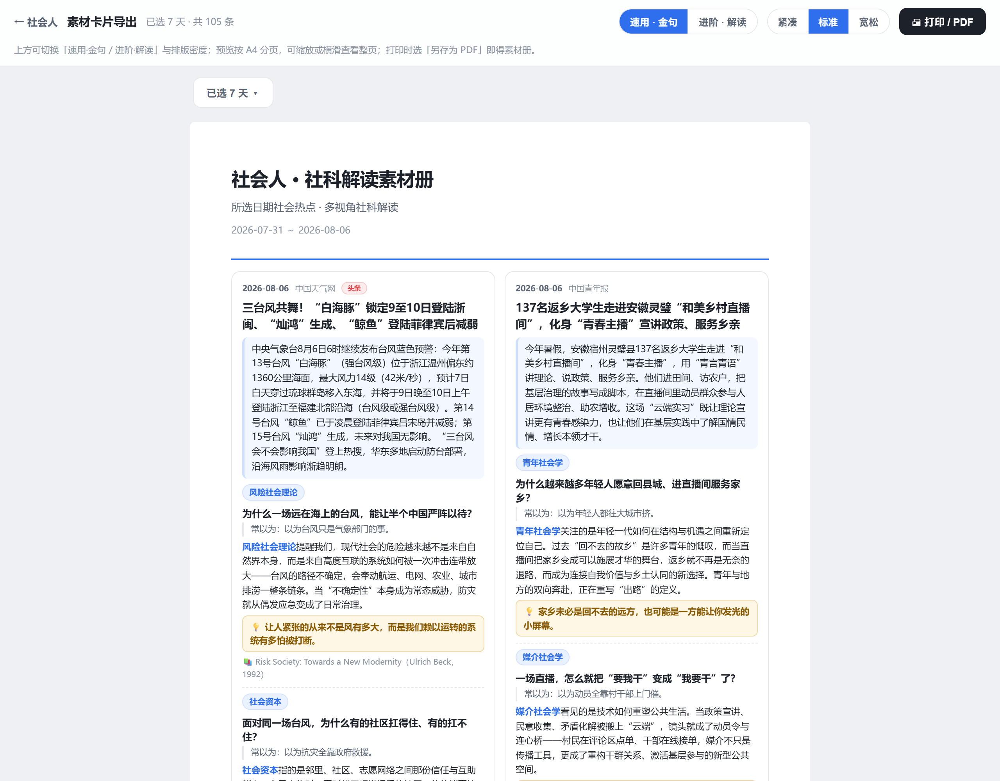
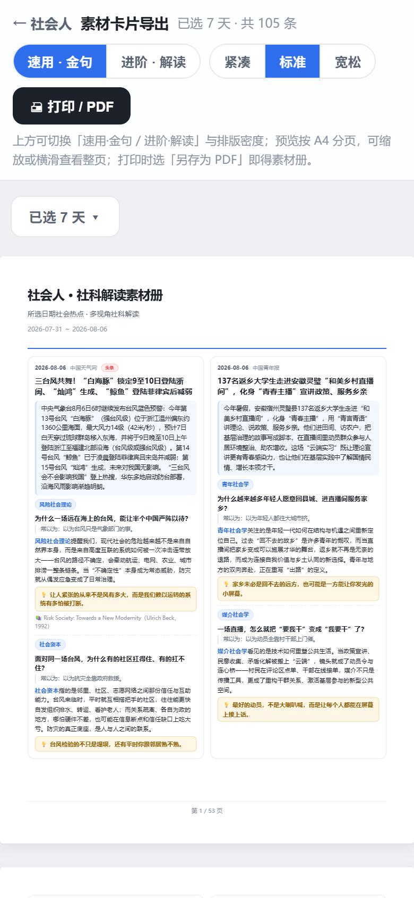

社会人 功能模块说明
帮助初学者理解社会科学理论的可视化网站 · 本文档是功能契约，所有改动需同步更新
v1.58 · 2026-08-13 配套成本文档：支出文档.html产品定位
用社会科学看社会 —— 将高大上的理论落地到社会生活的实践中。网站包含两个页面：
"HTML" = 本功能说明文档（契约文件）
"网站" = sociology-map.html（实际产品）
- 社会热点（首页）：每日抓取新闻，用社会科学理论解读，让理论接地气
- 知识图谱：311个节点（社会学107·经济学102·心理学102；社会学含思想家33·理论21·概念35·领域18，经济/心理各思想家29·理论21·概念34·领域18），采用力导向有机布局（学科以外环颜色区分、可选时间轴 X 约束——刻度仅在有节点的年段绘制），展示社会科学三大领域理论的发展脉络与跨学科网络
[B1] 后端总架构
整个系统由四个角色组成，各司其职：
| 角色 | 是什么 | 作用 |
|---|---|---|
源目录sociology-map/ | 本机项目文件夹 | 所有代码、新闻数据、脚本的唯一真身（Source of Truth） |
部署镜像ctrip-claw/ | 源目录的副本 | deploy-netlify.js 从这里读取并发布；自动化每次入库会把 news-data.js 同步过来 |
| 托管 Netlify | 云服务器 | 生产站点 shehui-ren.com（海外免备案，自动 HTTPS）；预览站 xxx--shehui-ren.netlify.app |
| 跨设备备份 Gitee | 私有 Git 仓库 | no-works-yet/shehui-ren；另一台 Mac git pull 即拿全部源码 |
.netlify_token（Netlify 令牌）、.gitee_token（Gitee 令牌）都放在源目录，已 gitignore，绝不进仓库。换设备或泄露时只换令牌、不碰代码。
[B2] 新闻数据流水线（15 步全自动）
每日北京时间 02:00 由 Gitee Go（国内 runner）流水线（.gitee/workflows/news.yml）抓取真实新闻热榜（头条热榜为主 + 微博/知乎尽力）→ 质量过滤（剔除娱乐/明星/体育比分/游戏/个人 vlog 类，按公共议题打分排序，只留适合作文的真实新闻）→ DeepSeek 生成 → 推送 GitHub；GitHub Actions（.github/workflows/daily-news.yml，on: push）随后部署 Netlify（详见 [B8]）。彻底不再依赖本机开机。
news-source.js 程序化拉多个国内公开热榜 JSON 端点（微博 / 百度 / 知乎 / 头条 / 抖音），任一可达即用、被反爬源自动跳过（不致命）；合并去重（跨榜同题合并 platforms→用于 major 判定）→ 轮转交错取前 ~34 条候选池。当前服务器 IP 下稳定可用：百度 / 头条 / 抖音。
[3b 安全回退] 全部来源均不可用 → getCandidates() 返回 null → 流水线退出（不写文件）→ 沿用昨日真实新闻，绝不回退样例冒充真实新闻（sample-candidates.json 仅离线 --sample 调试用）。
[4 S0过滤] 政治/谣言/NSFW/UGC个人帖(无编辑源佐证) → 剔除
[5 S2特大] 跨热榜归并，≥4 平台 = 特大(major+platforms)
[6 打分] S4强度(strong/medium/weak·weak剔) / S3学科 / S6链接合法 / S4.5社会锚点(A强/B可建构/C纯描述·C淘汰)
[7 S1组批] 含全部A/B类特大 → 补热榜非特大至(15-Q) → S2.5主题配额Q=3填满15；去重；S5时效
[8 S6校验] 字段齐全+url可访问+重抓主源核对事实一致+essayQuote必填(骨架轮换风格·200–280字·起型须按全局分配表·相邻不起同型·速用金句)
[9 S9研究] 每条中英文各搜一次，挂载直接相关的前沿研究(best-effort)
[10 入库] 用 Edit 把 'YYYY-MM-DD':[15条] 插入 news-data.js；超 7 天删最旧
[11 同步镜像] cp news-data.js → ctrip-claw/
[12 写日志] news-review-log.json（chosen/rejected/summary）
[13 自检] node news-validate.js（含 essayQuote 必填 + 180–300字长度硬闸 + skeleton 标签校验；不通过不发布脏数据）
[14 部署] node deploy-netlify.js → 上线 shehui-ren.com
[15 汇报] 中文列出本批 15 条 + 关联理论 + 是否特大 + 主题倾斜条数 + 三科覆盖 + 校验结果
[B2.5] 速用语段骨架轮换机制（v1.57）
问题：v1.56 把 essayQuote 写死成单一「金句项链」模具（矛盾破题→两层展开→对仗收尾），导致每日 15 条结构高度雷同、句式套路化。
方案（A+B 折中）：把单一模具换成「骨架库 + 写死轮换表」。模型在指定骨架类型内自由发挥内容（灵动），但起型严格按全局分配表生成（不雷同、不重跑）。
起（开头）6 型：引=引用名言/古语 · 排=排比铺陈 · 情=情景意象 · 设=设问反问 · 对=对比对立 · 警=警句突现
承（展开）5 型：五=五步标准论证 · 正=正反对比 · 辩=辩证思辨 · 叠=同类叠加 · 破=驳论破立
转（收尾）5 型：升=升华立意 · 号=号召行动 · 展=展望寄语 · 环=呼应回环 · 隐=哲理隐喻
第1条=引 / 第2条=排 / 第3条=情 / 第4条=设 / 第5条=对 / 第6条=警 / 第7条=排 / 第8条=引 / 第9条=情 / 第10条=对 / 第11条=设 / 第12条=警 / 第13条=情 / 第14条=引 / 第15条=排
（流水线分 3 批×5 条生成，每批调用时由 generateBatch 传入全局起始索引，逐条在新闻条目后标注【本条起型必须为：X】，保证分批后仍整体多样）
- 字数：规范 200–280 字（校验余量 180–300）；至少含 1 个可背诵金句，修辞不限（不再强制对仗）。
- skeleton 标签：模型额外输出
skeleton="起型·承型·转型"（如「引·辩·升」）用于校验；写回 news-data.js 时剥离，线上数据不含该字段。 - 校验兜底：fix-essayquote.js 强校验「起型==分配表、承/转在库、字数」；validate-light.js 校验 skeleton 格式/类型。A+B 下极少触发重跑，不额外消耗额度。
- 代码落点：
fix-essayquote.js（systemPrompt / buildUser / 校验）、news-pipeline.js（ESSAY_SKELETON_SEQ 常量 / generateBatch 传 start / 写回剥离）、validate-light.js（skeleton 校验 + 字数余量）。
[B3] 审核标准（NEWS_REVIEW_STANDARD.md）
这是选稿的"宪法"，自动化每一步都对照它执行。核心闸门：
| 编号 | 闸门 | 一句话 |
|---|---|---|
| S0 | 合规（最高优先级） | 政治敏感/谣言/NSFW/血腥一律剔除；来源分三级，UGC 个人帖排除，热议话题须有≥1编辑源佐证 |
| S1 | 条数=15 | 每天恰好 15 条，批次内不重复同一事件 |
| S2 | 特大必含 | 同一事件出现在≥4个热榜=特大，必须进 15 条 |
| S2.5 | 主题倾斜配额 | 每批预留 Q=3 给"官媒白名单+青春/家国/思辨母题+正向框架"的新闻，降热度门槛但严防放水 |
| S3 | 三科交叉 | 整体须触社会学/心理/经济三科；与 S4 冲突时强度优先 |
| S4 | 关联强度 | strong(核心)/medium/weak(过弱)；每条≥1 strong，weak-only 剔除 |
| S4.5 | 社会锚点·可辩论性 | 议论文要"有人能争"：A强锚点入选，B可建构须写出人/社会角度，C纯描述(纯自然/纯数据)一律不入选 |
| S5 | 时效 | 早班取近24h、晚班取当日12:00后；7天内同事件不重复 |
| S6 | 字段+事实一致 | 必填齐全+url有效+入库前重抓主源核对标题/数字/路径不自相矛盾 |
| S7 | 留存 | 只留最近 7 天；候选不足时降级发布但保 S0/S4/S6 底线 |
| S8 | 日志 | 产出 news-review-log.json 供人工抽查 |
| S9 | 前沿研究 | best-effort 加分项，挂直接相关真实研究，不强凑 |
[B4] 节点关联机制（新闻 ↔ 社科节点 / 主题节点）
每条新闻都要挂两类"节点标签"：社科节点（theories[] / interpretations[].lensId，指向知识图谱里的理论、概念、思想家）和主题节点（essayTopics[]，指向作文母题词表）。用户问得对——这两类到底怎么来的？答案是 「固定受控词表 + 大模型语义理解 + 规则校验」三层叠加：既不是纯关键词硬匹配，也不是大模型自由发挥。
① 社科节点（theories / lensId）—— 大模型语义理解为主
- 词表是固定的：12 个节点数组（THINKERS / THEORIES / CONCEPTS / TOPICS 各三科 soc / econ / psy）汇总成
{ id → name }受控词表，新闻只能从这里挑、不能凭空造。成本优化（2026-08-07）：自动化不再每次读 386KB 的sociology-map.html，改为先跑extract-nodes.js（本地免费）预抽取为约 15KB 的node-index.json，步骤[2]只读这个小文件；自检步骤[13]也不再重读 350KB 的news-data.js，改读news-validate.js的短输出。这是"封闭集合"，新闻只能从这里挑，不能凭空造。 - 关联是语义的：大模型读每条新闻候选，判断它和哪些社科节点相关、相关多强（
strong核心 /medium显著 /weak仅蹭热度），输出theories[]与interpretations[].lensId。这一步是语义理解，不是"标题含某词就打某标签"。 - 规则兜底校验：步骤[8]（S6）硬闸——
id必须 ∈ 受控词表、label必须等于词表中的节点名、每条≥1 个 strong 链接、weak-only 直接剔除；不通过打回重生成。
② 主题节点（essayTopics）—— 全部新闻由 AI 语义直写
- 词表也是固定的：
topic-lib.js的TOPIC_LIB.topics，每条含id / label / dim，dim 分多个母题维度（青春成长·青年担当、家国情怀·时代使命、思辨辩证、文化自信·传统创新、科技与人文、道德修养·价值选择、社会现实·人类关怀 等）。 - 全部新闻都由 AI 语义直写（方案C）：自 2026-08-06 起，每条入选新闻（含热榜非特大与特大）都由大模型基于新闻语义，从
TOPIC_LIB全词表（9 个母题维度）直接挑选 1–4 个essayTopics写入，维度不限；不再区分"重要/非重要新闻"，也不再有任何固定映射表或部署前补标脚本。 - S2.5 主题倾斜配额（Q=3）仍保留：官媒白名单(G1)+青春/家国/思辨母题(G2)+正向框架(G3) 齐备的新闻在步骤[7]被选为
themePick（每批≤3 条，仅决定"配额名额"与日志标记），但essayTopics本身已覆盖全部新闻、由 AI 统一直写，themePick不再独占该字段。
社科节点 = "大模型读新闻语义挑 + 固定词表校验"；主题节点 = "全部新闻由大模型基于语义从 TOPIC_LIB 受控词表直写 1–4 个（维度不限）"。两条线最终都落在固定的受控词表上，保证前端标签永远合法、可跳转；区别是主题节点不再有"固定映射/规则派生"一层——彻底改为语义直写，根除"节点级绑定过度泛化导致错贴主题"的问题。
[B5] 数据 Schema（NEWS_DATA）
前端通过外链 <script src="news-data.js"> 读取。结构形如 var NEWS_DATA = { 'YYYY-MM-DD': [15条], ... }，只保留最近 7 天。
| 字段 | 类型 | 说明 |
|---|---|---|
id | number | 当日批内序号 1–15 |
title / source / url | string | 标题 / 来源 / 原文直链(须 HTTP 200) |
kicker | string | 可选小标签，如"职场·社会学/心理学" |
gist | string | 一句话立论，开篇点明社科内核 |
thread | [{t,x}] | 事件脉络时间线 |
interpretations | [{q,naive,lens,lensId,body,aha,research?}] | 疑问驱动解读（进阶模式素材） |
theories | [{id,label}] | 关联知识图谱节点（id 必须∈节点集） |
major / platforms | bool / string[] | 是否特大 / 判定平台(≥4) |
essayTopics | [{id,label}] | 作文主题标签（id∈TOPIC_LIB），速用模式用 |
essayQuote | string | 速用金句（骨架轮换风格，200–280字，从「骨架库」选起/承/转各一型组合，相邻不起同型，必填） |
research | {...} | 可选，嵌套于 interpretation 的前沿研究 |
[B6] 部署与上线机制（deploy-netlify.js）
- 生产部署：
netlify deploy --prod，读.netlify_token把源目录发布到 shehui-ren.com。 - 额度兜底：Netlify 免费额度耗尽时生产会 403；脚本自动改走"草稿部署 +
POST /restore发布为生产"，照样上线（每日新闻自动化就走这条路）。 - 预览模式：传
--staging只发草稿、不动线上，把预览地址发你验收；你说"发布"后再跑不带参的转正。功能/大改才走预览，每日新闻直接上线。 - Gitee 自动同步：部署成功后自动
git add news-data.js news-review-log.json && commit && push，另一台 Mac 即最新。 - 缓存刷新：改 HTML/CSS 须 bump
sw.js版本号（当前shehui-ren-v42），否则手机 PWA 缓存旧页；news-data.js走网络优先，刷新即最新。 - 作文主题直写（方案C）：
essayTopics由新闻自动化在入库时由 AI 语义直写（全新闻），部署脚本不再做任何补标；_annotate_topics.js已退役删除。
[B7] 校验与防御（news-validate.js）
- 逐条硬闸：必填字段齐全 + essayQuote 速用金句必填 + 180–300字长度硬闸（规范 200–280 字骨架轮换风格） + skeleton 标签格式/类型校验（缺或字数/类型不符则 FAIL，脏数据不发布）。
- 跑在 Node 沙箱（已补全
matchMedia/location等浏览器 API stub），自动化步骤13 调用；不通过则保留日志并告警、不入库。 - 根治史：2026-08-06 前 essayQuote 常漏（靠事后手补）；现已强制必填 + 硬闸，7天105条 FAIL=0。
[B8] 调度（云端化 · 不再绑死本机）
每日新闻生成与部署已彻底云端化、且抓取搬到国内。v1.51–v1.57 在 GitHub Actions（海外 runner）抓取，海外 IP 抓不到微博/知乎（403/401），被迫回退样例 → 线上出现假新闻。v1.58 起改为：抓取+生成在 Gitee Go（国内 runner，北京时间 02:00）完成，生成后推送 GitHub，由 GitHub Actions（海外，能连 Netlify）在 push 时部署。两端各司其职：国内抓、海外发。
- 流水线脚本（scripts/）：
llm.js(DeepSeek 客户端·非思考模式) /vocab.js(311 节点+34 主题受控词表) /news-source.js(候选源：头条热榜主源+微博/知乎尽力源 JSON；已剔除抖音(娱乐视频标题)与百度实时榜(搜索联想词)等非新闻源；内置质量过滤——黑名单剔除娱乐/明星/体育比分/游戏/个人vlog、按公共议题(政策/经济/科技/社会/文化)打分排序取前 60；全部失败则不覆盖、绝不发样例) /validate-light.js(轻量校验，硬闸同 news-validate.js) /news-pipeline.js(编排)。 - 密钥走 Secret：Gitee Go 密文
DEEPSEEK_API_KEY/GITHUB_PAT（推送 GitHub 用）；GitHub Actions 密文NETLIFY_AUTH_TOKEN。均不进代码（本地测试用仓库根.env，已 gitignore）。 - 成本：约 ¥0.04–0.11/天（DeepSeek 非思考模式，3 次调用）；故 Actions 排在凌晨非高峰。DeepSeek 近年多次调价，高峰翻倍需注意。
- 本地手动跑：
node scripts/news-pipeline.js --dry-run（只校验不写）／node scripts/news-pipeline.js（真实写回）。已用真实 API 端到端验证：news-validate.js 7 天 FAIL=0/WARN=0。 - v1 已知权衡：公开热榜多只给标题、不给正文，云端大模型基于标题+通用知识撰写解读，
thread以结构性背景脉络为主、不编造具体日期/单一确凿事件；后续可接入「按 url 抓取正文」提升保真度（扩展点）。 - v1.57 后稳定性加固（2026-08-13）：①
daily-news.yml的DEEPSEEK_MODEL/DEEPSEEK_BASE改为硬编码默认值deepseek-v4-flash/https://api.deepseek.com（对齐本机成功配置，规避 Secret 配错导致生成失败）；②news-pipeline.js的normalizeItem对「单条theories节点全部不在受控词表」做兜底（先借interpretations的有效 lens，再不行用全局首个节点），不再因单条失效整批放弃，根治此前云端偶发「归一化失败→整任务 failure→当天无新闻」。 - v1.58 抓取搬国内 + 多源真实热榜（2026-08-13）：① 根因——v1.51 起新闻在 GitHub Actions 海外 runner 抓取，海外 IP 抓不到微博/知乎（403/401）→ 回退
sample-candidates.json→ 线上 11/12/13 出现假新闻冒充真实来源。② 多源——news-source.js扩为微博/百度/知乎/头条/抖音 多端点，合并去重+跨榜同题合并 platforms→major 判定；被反爬源自动跳过（不致命）。③ 安全回退——全部来源失败返回 null → 流水线退出、不写文件、沿用昨日真实新闻、绝不发样例。④ 架构——抓取+生成搬 Gitee Go（国内 runner，北京时间 02:00），生成后推 GitHub；GitHub Actions 改为on: push仅部署（海外能连 Netlify）。⑤ 契约纠偏——[B2] 原写「WebSearch/WebFetch 多源」与实际单源不符，已改真实多源+国内架构。⑥ 实测——本机多源抓取拿到 34 条真实候选、3 源跨榜同题可识别。待用户在 gitee.com 开启 Gitee Go + 配 DEEPSEEK_API_KEY/GITHUB_PAT 后全自动接管。
[B9] 付费下载 PDF 链路（方向B：服务端生成 + 自动支付门禁）
回应"手机打印会把 A4 排版拦腰折断、且需可带走/可付费"：废弃浏览器原生打印方案，改为服务端用 pdf-lib 生成真实 A4 PDF，所有设备拿到同一份文件、中文正常、自动分页、绝不在卡片中间截断。下载前经权益令牌(HMAC-SHA256)门禁，未付费返回 403。
- 权益令牌：
_common.js的signToken/verifyToken用PAYWALL_SECRET做 HMAC-SHA256，载荷{paid, plan, iat, exp}；下载时只验签名+有效期，不查库，可水平扩展。exp过期（默认 365 天）或paid为假即拒。 - PDF 生成：
pdf-builder.js用 pdf-lib 嵌入黑体（subset:true）、按 A4(595.28×841.89pt) 排版，支持 速用(金句)/进阶(解读) 两模式 × 紧凑(3栏)/标准(2栏)/宽松(1栏) 三密度，卡片break-inside:avoid不跨页。 - 字体加载（稳健性关键）：
_common.js的loadFontBytes()优先读本地assets/fonts/simhei.ttf（dev），生产函数包不含字体时回退fetch('https://shehui-ren.com/assets/fonts/simhei.ttf')（仓库静态资源，随站点发布），无需把 9.7MB 字体打进函数包、也不会"字体缺失"。自定义域名用环境变量PDF_FONT_URL覆盖。 - 部署：
netlify.toml设functions.directory = "api"，Netlify 按api/package.json自动装pdf-lib+@pdf-lib/fontkit（无需提交api/node_modules）。函数随站点一同发布。 - 当前状态：默认
PAYMENT_PROVIDER=mock，paywall-dev.js本地即可跑通全链路（订单→模拟支付→令牌→PDF→无令牌403）；真实微信/支付宝 Native 支付的下单与异步通知为占位，填商户号+密钥后即生效（详见PAYMENT_INTEGRATION.md）。 - 前端：
news-export.html顶部「下载 PDF（付费）」按钮默认上锁，点击弹支付窗（mock 显示「模拟支付成功」、真实显示收款码），付费成功后将令牌存 localStorage 并触发下载；原有「打印」按钮仍免费可用。 - 缓存：因改动
news-export.html，service worker 缓存shehui-ren-v46→shehui-ren-v47。
node paywall-dev.js 起服务 → 浏览器开 http://localhost:8787/news-export.html；node .test-flow.js 跑全链路断言；node .debug-pdf.js 单测 PDF 生成。
双页面架构
网站采用双页面架构，通过顶部 Tab 切换。两个页面共享同一套 CSS 变量和部分组件（如详情面板），但各自独立渲染。
页面一：社会热点（首页）
打开网站后首先看到社会热点页面。页面默认进入速用模式，顶部 Hero 区会根据模式动态切换文案：速用模式显示「世间热点皆素材」/「每一个热点，都是直接能用的议论文素材」，进阶模式显示「社科视角，站得更高」/「我提供视角，你自由发挥」。标题区右上角提供导出素材图标入口（点击打开 news-export.html）。页面主体左侧为按年月折叠的日期导航边栏，右侧为新闻卡片网格；点击卡片从右侧滑出 440px 详情面板。


[A10] 日期导航边栏
以年月日分组显示所有可查日期。最新日期在最上方并高亮显示（红色背景白色文字）。点击日期切换显示该日的15条新闻。
设计要求：当日期较多时，按月份分组折叠显示。例如"2026年7月"下展开显示所有7月的日期。
当前为左侧垂直边栏，日期按"年-月"分组、可折叠展开，最新日期高亮在最上方。点击切换显示该日 15 条新闻。
[A11] 新闻卡片网格
每个日期显示 15 条不重复 的新闻，以 3 列网格排列（3 列 × 5 行）。每张卡片固定包含：序号（前 3 名红色高亮）、新闻标题、来源 + 日期元信息。卡片下半部分随顶部阅读模式开关变化：
- 速用模式：正文显示
essayQuote（可直接引用的作文金句，2 行截断），底部显示最多 3 个作文主题标签（琥珀色药丸，如「青年责任」「快与慢」），帮助用户快速定位适用作文母题。 - 进阶模式：正文恢复为
gist（一句话立论），底部显示最多 6 个社科知识节点标签（青色药丸），点击可跳转知识图谱聚焦对应节点；超出时显示+N按钮展开详情。
当前共 105 条 不重复新闻，分 7 个日期（每日 15 条）。默认模式为速用（首次访问），localStorage 会记住用户上次选择。
[A8] 新闻详情面板
点击新闻卡片后从右侧滑出（宽 440px）的详情面板。面板顶部有一个独立的「速用 / 完整」小开关，仅控制当前这一篇文章的显示方式，不影响顶部全局开关。首次打开时默认跟随顶部全局模式；用户临时切换后，关闭再开才会恢复全局默认值。
根据当前模式，面板内容分为两套：
- 速用模式：① 一句话新闻事实
gist；② 作文素材卡（essayQuote，可直接引用）；③ 适用作文主题区块（列出本条命中主题、所属维度、标签定义，琥珀色药丸，不关联知识图谱）。 - 进阶模式：完整 4 区块——一句话立论
gist、事件脉络thread、以读者真问题驱动的interpretations（真问题 / 常识误判 / 透镜 / 学术解读 / 顿悟 / 可选前沿研究）、以及关联理论按钮（含局部网络弹窗与图谱跳转）。


[A8-export] 素材卡片导出页
点击社会热点页标题区右上角的导出图标，或在浏览器直接打开 news-export.html，进入素材导出页。页面用于把选中的多日期新闻按 A4 纸排版预览，并可一键打印 / 另存为 PDF。
顶部工具条（屏幕预览用，不进入打印）
- 返回：回社会热点页。
- 已选 N 天 · 共 M 条：实时统计当前选中日期范围与新闻总数。
- 阅读模式切换：「速用 · 金句」导出
essayQuote（可直接背诵/引用）；「进阶 · 解读」导出完整interpretations（含真问题、学术解读等）。 - 排版密度：紧凑（3 列 / 小字）、标准（2 列 / 中字）、宽松（1 列 / 大字）。三档在 Web 与手机上保持一致列数。
- 打印 / PDF：调用浏览器原生
window.print()，配合@media print把每一.page作为一页 A4 输出。
日期选择
点击「选择日期 ▾」展开月历弹层。日历仅 NEWS_DATA 中有新闻的日期可选（灰色为无新闻），支持多选；底部提供「最近 7 天 / 全选 / 清除」快捷操作，点击「确定」后关闭弹层并重新渲染预览。默认预选最近 7 天。
WPS 式 A4 分页预览
预览区以一张张 210mm × 297mm 的白纸呈现，JS 按内容高度自动分页，每张卡片 break-inside:avoid 不跨页；每页底部带「第 X / Y 页」页脚。
手机端适配：不再像早期版本那样"减列数"，而是对整张 A4 纸施加 transform:scale(calc(100vw / 210mm))，把纸宽恰好缩到屏宽，列数仍为 3/2/1 与 Web / 真实打印完全一致；.pages 限制横向溢出，页面可竖向滚动浏览。


页面二：知识图谱
通过顶部导航栏点击"知识图谱"切换。页面以 Canvas 绘制社会科学三大领域（社会学 / 经济学 / 心理学）的知识网络图谱，采用 力导向有机布局（Obsidian 风格，节点自由聚簇、可拖拽平移/滚轮缩放），学科不再做页面级分带，仅以节点外环颜色区分；时间轴为可选开关（默认关）。
探索社会学的知识宇宙
每个人都是社会的产品，却很少理解塑造我们的力量。点击图谱中的节点，进入每一个理论的世界。
[A5] 知识图谱 Canvas
使用 HTML5 Canvas 绘制 311个节点（社会学107·经济学102·心理学102）与 约638条连线（含跨学科桥接边，以及概念↔概念、思想家↔思想家两类同级直连）。布局采用力导向有机布局（Obsidian 风格），学科不做页面级分带；节点区分学科采用双重标识：① 节点外环颜色（社会学蓝 #5B6FB5 / 经济学金 #D4A017 / 心理学绿 #2FA37C）；② 标签前学科圆点——每个节点显示名前加一个带学科色的实心小圆点、圆内嵌学科单字「社/经/心」（如「●社 失范」「●经 稀缺」「●心 依恋」），悬浮提示与局部网络小图同步带圆点。支持拖拽平移 + 滚轮缩放。核心机制：
- 力导向：每帧
tick()执行斥力 + 连线弹簧 + 居中力 + 学科聚类力（非时间轴模式：把同属一学科的节点拉向该学科横向锚点 W×0.2/0.5/0.8，使三学科分成左右三簇；居中力横向分量相应减弱到 *0.4 让聚类力主导横向分布）+（可选）时间轴 X 软约束；alpha随节点数自适应冷却，进入页面约 0.5s 停稳；单帧速度设VMAX上限防爆炸。边界为宽松世界盒[-W,2W]×[-H,2H]（v1.24 起，原为死夹屏幕条盒[0,W]×[0,H]），节点可自由铺散、靠平移/缩放探索。视角：进入页面（桌面+移动统一）自动fitToView()按可见节点包围盒铺满视口（初铺 + 收敛后精铺两次）；右下角「⟳ 全图」按钮一键复位。 - 播种：初始采用洗牌式网格播种（确定性打散网格单元、三学科交错混排），节点自然聚簇、互不重叠。
- 时间轴：开启时直接将节点 X 预置到年份位置（Y 不变），杜绝贴角聚集；刻度仅在有节点的 50 年段绘制，不显示无节点的空白年段。
- 连线渲染：按关联强度
s分层（强关联更粗更亮、弱关联更细更淡）；同级直连边在addE内无向去重（同对边保留较强强度 s）。 - 跨学科成网：学科间跨科边 34 条（心理学贡献 26，含"社会化"节点与精神分析/本我自我超我/依恋/刻板印象/损失厌恶等桥接），三科真正成网。
- 视觉增强：叠加渐变发光节点、流动虚线连线、正弦浮动动画等。
节点颜色规则：
- 节点本体：思想家=深蓝(#3D4F8F)、理论=红(#C84B3A)、概念=青(#3A8C8C)、领域=紫(#8B7EC8)。
- 学科外环：社会学=蓝(#5B6FB5)、经济学=金(#D4A017)、心理学=绿(#2FA37C)——外环加粗至 4px 并带轻微同色发光。
下列明细为社会学一科（经济学 econ_*、心理学 psy_* 各有平行的 29/21/34/18 节点，id 以 econ_/psy_ 前缀区分）：
思想家(29)：马克思、涂尔干、韦伯、齐美尔、米德、帕森斯、默顿、福柯、布迪厄、吉登斯、鲍曼、贝克尔、巴特勒、萨义德、拉图尔、戈夫曼、哈贝马斯、阿多诺、马尔库塞、波伏娃、胡克斯、德里达、德勒兹、斯皮瓦克、沃勒斯坦、科尔曼、伯格、卢克曼、贝克
理论(21)：冲突理论、功能主义、理性化、符号互动论、结构主义、理性选择、后结构主义、批判理论、女性主义、晚期现代性、社会建构论、后殖民理论、酷儿理论、行动者网络、拟剧论、交往行动理论、风险社会、网络分析、新制度主义、形貌社会学
概念(34)：阶级斗争、失范、理想类型、社会团结、社会事实、越轨、权力-知识、惯习、资本形式、反思性、社会建构、全球化、交叉性、文化资本、社会资本、符号暴力、全景敞视、表演性、东方主义、他者化、核心-边缘、优绩主义、情绪劳动、注意力经济、不稳定无产阶级、生活机会、社会流动等
领域(18)：社会分层、教育、城市、数字、家庭、工作、宗教、健康、环境、移民、媒介、法律、科学、青年、犯罪、贫困、性别、技术
[A6] 图例筛选
类别筛选改为多选复选框（思想家 / 理论流派 / 核心概念 / 研究领域），默认仅勾选「核心概念」，用户按需勾选其余类型逐步揭示；筛选后只显示选中类型节点及其相互之间的连线（连向隐藏类型节点的悬空线不再绘制，已修复）。学科筛选（全部/社会学/经济学/心理学）保留为可选单选，仅去视觉分带。另新增「时间轴」开关（默认关）：开启后 X 轴软约束到年份、Y 轴由力导向自由散开。
[A7] 节点 Tooltip
鼠标悬停在节点上时显示浮动提示框：节点名称（大字加粗）+ 一句话描述（小字灰色）。
[A14] 知识节点详情卡片
在知识图谱页面点击任意节点后，从右侧滑出的知识卡片（容器 #theoryPanel，样式 .theory-panel）。由 showPanel(node) 调用 buildDetailHTML(node) 动态渲染，四类节点各有不同内容结构：
🔵 思想家：真实照片（取自维基共享资源，29 位中 25 位已配真实头像，其余 4 位降级为首字渐变初始头像）+ 主要著作（📖 列表）+ 核心思想（逐条展开讲解，不再只给关键词 chips） + 生平与贡献 + 关键理论（可点击跳转）
🔴 理论流派：简介 + 一句话理解（🔴 红色高亮框）+ 深入解读 + 代表人物 + 核心概念（均可点击）
🟢 核心概念：简介 + 详细解释 + 生活里的例子（💡 青色高亮框，已为全部 34 个概念补齐生活化例子）
🟣 研究领域：领域概览 + 关联理论（可点击）
通用尾部：关联节点（药丸按钮）
卡片标题已变为可点击链接，指向该词条对应的维基百科页面（优先中文维基，无中文词条时回退英文维基），新标签页打开。数据通过 Wikipedia API 批量获取并写入 NODE_META，在 initNodes 中随 ENRICH 一并合并进 node.data.wiki；思想家头像 URL 同样来自 Wikipedia（node.data.photo），图片加载失败时经 onerror 自动回退到首字初始头像。
该按钮仅出现在 [A8] 新闻详情面板的关联理论弹窗中（buildDetailHTML(node, 'modal') 传入 context）。[A14] 知识节点卡片本身已在知识图谱内，不再包含此按钮（buildDetailHTML(node, 'panel') 不渲染）。该按钮为 navy 实底、hover 上浮阴影的醒目主按钮，与上方详情间距 28px。
A14 是知识图谱页面点击节点弹出的右侧滑出卡片（.theory-panel / #theoryPanel）；A8 是新闻详情面板里点「关联理论⤢」弹出的局部网络弹窗（.theory-modal）。两者共用 buildDetailHTML() 渲染节点详情，但容器、触发入口与布局不同。概念的英文 id 均经 CONCEPT_LABELS 映射为中文显示。
由于知识图谱节点的「源节点 B」会被新闻各视角 perspectives[].research[].fromNode 引用，该节点的 A14 卡片尾部会反向聚合所有引用它的前沿研究（标题 + 年份·期刊 + 外链，最多展示 6 条）。即：新闻的某视角内点「溯源 → B」跳到节点 B，节点 B 的卡片里又能看到「哪些新闻的哪个视角引用了这项研究」——形成新闻↔知识的双向可达。无引用时该聚合块不渲染。
[A2] 导航栏
固定在页面顶部（56px高），显示网站 Logo 和两个 Tab 切换按钮。社会热点排在左侧（第一个），为默认激活状态。
[A1] 设计变量
定义全局颜色、字体、圆角、阴影等设计变量。所有组件通过这些变量保持一致的视觉语言。
[A4] 页面容器
两个页面容器 #page-map 和 #page-topics，通过 CSS .page / .page.active 控制显示/隐藏。默认 #page-topics 为 active。
[A13] 响应式
移动端适配（≤768px）：导航栏隐藏 Tab、Canvas 高度降低、网格变单列、详情面板全宽。
[C1] 图谱数据
4个数据数组，定义知识图谱的所有节点信息。修改数据不影响渲染逻辑。
THINKERS = 29人 · THEORIES = 21个 · CONCEPTS = 34个 · TOPICS = 18个
合计 102个 数据条目，全部在图谱中显示。连线由元数据（keyThinkers / concepts / influence / TOPIC_THEORIES / EXTRA_EDGES / EXTRA_CONCEPT_LINKS）自动生成，共 231条。
[C2] 新闻数据
NEWS_DATA 对象，按日期分组存储新闻，外置为独立 news-data.js（由 sociology-map.html 通过 <script src="news-data.js"> 引入），自动化只改写这个小数据文件，不再触碰主文件。由 WorkBuddy 自动化每日 9:06 与 21:06 自动触发，自己完成抓取 + 审核 + 入库——抓取 ≥4 个热榜指数 + 综合新闻，按 NEWS_REVIEW_STANDARD.md（S0–S9）审核（合规硬闸 / 特大跨平台识别 / 学科交叉 / 关联强度反向核实 / 时效去重 / 字段与链接校验 / 前沿研究 best-effort 内嵌解读），直接写入 news-data.js（新增当日日期键、保留最近 7 天），并产出 news-review-log.json 审核日志供抽查。每条新闻采用疑问驱动结构：gist 一句话立论 + thread 事件脉络 + interpretations[]（真问题 q → 常识误判 naive → 透镜 lens/lensId → 学术解读 body → 顿悟 aha，可内嵌 research 前沿研究），并标注真实图谱节点 theories[]（id ∈ 全节点集，label=节点名）用于"关联知识"。当前每日期 15 条。
[C3] Canvas 渲染引擎
负责在 Canvas 上绘制所有视觉元素。修改渲染逻辑不影响数据和交互。
[C4] 知识图谱交互
[C5] 新闻系统
[C6] 页面切换
[C7] 初始化入口
模块索引总表
前端 / 后端 / 通用 三类模块一览，点击模块ID跳转到对应章节。
| 模块ID | 模块名称 | 所属页面 | 类型 | 说明 |
|---|---|---|---|---|
| A1 | 设计变量 | 全局 | CSS | 颜色、字体、圆角、阴影变量 |
| A2 | 导航栏 | 全局 | HTML+CSS | 顶部Tab切换，社会热点在前 |
| A3 | Tab样式 | 全局 | CSS | Tab按钮高亮状态 |
| A4 | 页面容器 | 全局 | HTML+CSS | .page 显示/隐藏控制 |
| A5 | 知识图谱Canvas | 知识图谱 | Canvas+JS | 311节点（社会学107/经济学102/心理学102）+约638连线（含跨学科桥接、概念↔概念、思想家↔思想家同级直连），力导向有机布局（Obsidian风格）+学科外环（4px发光）+拖拽平移/滚轮缩放+节点半径按可见数量动态缩放+连线按关联强度分层渲染（强关联粗亮、弱关联细淡）+视觉增强+时间轴刻度仅在有节点的年段绘制，节点可点击；维基链接经 API 全量审核（311/311 可解析） |
| A6 | 图例筛选 | 知识图谱 | HTML+JS | 类别多选复选框（默认仅核心概念）+学科可选单选+时间轴开关 |
| A7 | Tooltip | 知识图谱 | HTML+JS | 节点悬浮提示框 |
| A14 | 知识节点详情卡片 | 知识图谱 | HTML+CSS+JS | 点击节点右侧滑出，四类节点富化内容(buildDetailHTML) |
| A8 | 详情面板 | 通用 | HTML+CSS+JS | 右侧滑出面板 |
| A10 | 日期导航 | 社会热点 | HTML+CSS+JS | 左侧日期边栏，按年月分组、可折叠（已完成） |
| A11 | 新闻卡片 | 社会热点 | HTML+CSS+JS | 3列网格，每日期15条不重复 |
| A12 | 新闻透视 | 社会热点 | CSS | 理论分析卡片样式 |
| A13 | 响应式 | 全局 | CSS | 移动端适配 |
| B1 | 后端总架构 | 后端逻辑 | 架构 | 四角色（源目录/镜像/托管/备份）+ 凭据隔离 |
| B2 | 新闻数据流水线 | 后端逻辑 | 自动化 | 抓取→审核→入库→上线 15 步全自动 |
| B3 | 审核标准 | 后端逻辑 | 规范 | S0–S9 / S2.5 / S4.5 选稿闸门 |
| B4 | 节点关联机制 | 后端逻辑 | 规则+语义 | 新闻↔社科节点(语义)/主题节点(AI语义直写·全新闻) |
| B5 | 数据 Schema | 后端逻辑 | 数据 | NEWS_DATA 字段定义 |
| B6 | 部署上线 | 后端逻辑 | 脚本 | deploy-netlify.js 生产/兜底/预览/Gitee |
| B7 | 校验防御 | 后端逻辑 | 脚本 | news-validate.js 硬闸(essayQuote必填) |
| B8 | 调度（云端化） | 后端逻辑 | 运维 | GitHub Actions + DeepSeek 每日 02:00 跑 scripts/news-pipeline.js，不再绑本机；密钥走 Secret |
| B9 | 付费下载链路 | 后端逻辑 | Netlify Functions | 服务端 pdf-lib 生成 A4 PDF + HMAC 令牌门禁（create-order/pay-confirm/pay-webhook/download）；mock 可联调，真实支付待商户号 |
| C1 | 图谱数据 | JS数据层 | JS常量 | 思想家29/理论21/概念34/领域18（共102，231连线） |
| C2 | 新闻数据 | JS数据层 | JS文件(外置news-data.js) | 全自动（抓取+AI审核+入库）；每日期15条，保留最近7天，附NEWS_REVIEW_STANDARD.md与news-review-log.json —— 完整流水线见 [B2] |
| C3 | Canvas渲染 | JS引擎 | JS函数 | 力导向tick+绘制节点/连线/点阵/屏幕空间学科图例（pan/zoom复合变换） |
| C4 | 图谱交互 | JS交互 | JS函数 | 点击/悬停/拖拽平移/滚轮缩放/多选筛选/跳转 |
| C5 | 新闻系统 | JS交互 | JS函数 | 渲染/详情/日期切换 |
| C6 | 页面切换 | JS交互 | JS函数 | Tab切换逻辑 |
| C7 | 初始化 | JS入口 | JS函数 | 启动绑定事件 |
更新日志
查看全部记录 ▾| 日期 | 版本 | 改动内容 | 涉及模块 |
|---|---|---|---|
| 2026-08-13 | v1.58.2 | [恢复新闻质量 · 真实新闻源 + 质量过滤] 回应"8/11 之后新闻质量大幅下降、完全不适合高中生写作文"：① 根因——v1.58 把抓取源换成微博/百度/知乎/头条/抖音热榜，其中抖音(娱乐视频标题)与百度实时榜(搜索联想词)根本不是新闻，被原样喂给大模型写成作文素材，导致内容水化；且没有任何"适合作文"的过滤/排序。② 换回真实新闻源——news-source.js 删除抖音与百度实时联想词，只留头条热榜(主，稳定 50 条正经新闻)+微博/知乎(尽力，被反爬则跳过)。③ 新增质量过滤——黑名单剔除娱乐/明星/八卦/体育比分/游戏/个人 vlog 文案，再按公共议题(政策/经济/科技/社会/文化/民生)打分降序排序取前 60，只保留适合作文的真实公共议题；过滤后不足则放宽兜底保证不空跑。④ 实测——本机抓取 50→过滤后 49 条真实新闻(生态环境/古桥垮塌/航母/IPO/最低工资标准/轰-6N/女干部牺牲/禁居民楼开餐饮…)；重跑 8/11–8/13 回填 FAIL=0、三天标题交集全为 0、作文段回到"绿水青山/发展哲学/外部性"水准。⑤ 纯后端数据+脚本+契约改动，无用户端 UI 改动；源码(契约)已同步。 | B2, 新闻自动化, DeepSeek |
| 2026-08-13 | v1.58.1 | [修复 8/11–8/13 新闻雷同 + 候选池扩大] 回应"历史三天内容还是一样"：① 根因——v1.58 回填 8/11–8/13 时，三日均用「同一时刻抓取的当下热榜」且都取候选池前 15 条，导致三天标题几乎复制粘贴。② 候选池扩大——news-source.js 每源抓取量 12→30，候选池由 ~34 扩至 ~89 条真实不同标题。③ 跨天去重回填——news-pipeline.js 新增 --exclude-dates 参数，回填历史日时排除已生成日期已用的标题（池≥45 时三天完全不重叠）。④ 实测——重跑三天：8/11∩8/12=0、8/11∩8/13=0、8/12∩8/13=0，互无重复；8/11(朱镕基/威少/DeepSeek涨价)、8/12(普京登岛/轰-6N/白海豚)、8/13(王希季逝世/胖东来/地下试管) 主题错开。⑤ 纯后端数据+脚本改动，无用户端 UI 改动；源码(契约)已同步。 | B2, 新闻自动化, DeepSeek |
| 2026-08-13 | v1.58 | [新闻抓取搬国内(Gitee Go) + 多源真实热榜 + 安全回退] 回应"线上出现假新闻冒充真实来源、契约多源描述与实际不符"：① 根因——v1.51 起新闻在 GitHub Actions 海外 runner 抓取，海外 IP 抓不到微博/知乎(403/401)→回退 sample-candidates.json→线上 11/12/13 出现假新闻。② 多源真实热榜——news-source.js 扩为微博/百度/知乎/头条/抖音 多端点 JSON，合并去重+跨榜同题合并 platforms(→major 判定)；被反爬源自动跳过不致命。当前服务器 IP 稳定可用：百度/头条/抖音。③ 安全回退——全部来源失败返回 null→流水线退出、不写文件、沿用昨日真实新闻、绝不发样例。④ 架构——抓取+生成搬 Gitee Go(国内 runner，北京时间 02:00)完成→推 GitHub；GitHub Actions 改 on:push 仅部署 Netlify(海外能连)。⑤ 契约纠偏——[B2] 原写"WebSearch/WebFetch 多源"与实际单源不符，已改真实多源+国内架构；[B8] 同步。⑥ 实测——本机多源抓取 34 条真实候选、3 源跨榜同题可识别。⑦ 支出文档无需改(成本不变，仍约 ¥0.04–0.11/天)。无用户端 UI 改动；待用户在 gitee.com 开启 Gitee Go + 配 DEEPSEEK_API_KEY/GITHUB_PAT 两密文后全自动接管。 | B2, B8, 新闻自动化, 部署, 运维, DeepSeek, Gitee Go |
| 2026-08-12 | v1.56 | [essayQuote 升级为「金句项链」风格 · 强化作文味] 回应"速用语段作文味不够浓"：① 根因：v1.54 的「高考议论文标准论证段·五步结构」偏逻辑论证、像社论，缺金句密度与修辞；用户指出 8/4–8/8 旧版金句（如「没有谁是不可替代的，迟钝的傲慢终将被时代悄悄清算」「社会的温度，不写在文件里，而藏在每个人愿为陌生生命多跑的那几步之中」）更有价值，据此提炼配方。② 提示词重写——essayQuote 改为「金句项链风格，200–260 字」：一根核心判断串起 2–3 颗可独立背诵的金句珠子；写法＝①开头抓人（矛盾/数字/比喻/反问句破题）②中段两层展开（简述新闻事实+提炼人/社会道理）③结尾短促有力（普世道理，15字内或对仗）；整段须含 2–3 个对仗/比喻/警策句，至少用一种修辞（对偶/排比/比喻/引用名言古语/对比/数字意象），显式点明人/社会角度；persona 改为「高考满分作文水准的金句素材段（发展等级·有文采）」，并弱化原"理性克制"为"有思辨深度、有少年意气、有社会关怀"。③ 一次性脚本同步——fix-essayquote.js 的 systemPrompt 同频升级。④ 当日数据急救——已用新提示词把 2026-08-12 的 15 条 essayQuote 重做（含卢梭/奥斯特罗姆/哈贝马斯/鲍曼/诺斯等引用、对仗金句、短促收束），部署上线、推 GitHub 云端仓库、Gitee 镜像三方一致。本变更为纯后端数据生成机制，无用户端页面/UI 改动；源码(契约)已同步。 | B2, B7, C2, 新闻自动化, DeepSeek |
| 2026-08-12 | v1.55 | [新增 DeepSeek 每日成本记录机制 · 配套支出文档] 回应"记录每一天使用 DeepSeek 的成本"：① 根因/缺口——此前无任何成本记录，且 llm.js 的 chat() 只返回文本、丢弃 API 响应里的 usage，无法知道每天花多少。② 用量捕获——llm.js 新增模块级用量累计（getUsage()/resetUsage()），在 chat() 中捕获每次调用的真实 token 用量（prompt_tokens / completion_tokens / 缓存命中 cached_tokens）。③ 成本记录模块——新增 scripts/cost.js：集中单价常量 PRICING（deepseek-v4-flash 官方现行价：输入缓存命中 ¥0.02/百万、未命中 ¥1.00/百万、输出 ¥2.00/百万；峰谷倍率×2 仅高峰触发，流水线 02:00 平峰不乘），computeCost() 由真实用量换算金额，recordCost() 追加写入 cost-data.js。④ 接入流水线——news-pipeline.js 与 fix-essayquote.js 运行结束各调一次 recordCost()，按天落账；daily-news.yml 的 git add 增加 cost-data.js 使其随流水线提交。⑤ 支出文档——新建 支出文档.html（加载 cost-data.js），含日/周/月/年账单表、单价口径、调用次数算式、边际成本速查表、额度状态、变更记录，与本契约互链。⑥ 实测——修复脚本单次真实调用：1 次 / 1565 输入(256 缓存) / 2307 输出 ≈ ¥0.0059。本变更为纯后端成本计量，无用户端页面/UI 改动；源码(契约)已同步。 | B2, B7, 成本, 新闻自动化, DeepSeek |
| 2026-08-12 | v1.54 | [essayQuote 升级为高考议论文标准论证段 · 五步结构] 回应"速用语段仍不尽如人意"：① 根因：v1.53 仅要求 essayQuote「100–130 字成段有论证」，但没规定议论文段落的标准结构，DeepSeek 易写成说明文/散文段，不像能直接抄进高考作文的论证段（缺观点句、无因果/假设/对比分析）。② 提示词重写——news-pipeline.js 的 essayQuote 指令改为「200–260 字高考议论文论证段，严格五步结构」：①观点句亮明分论点→②阐释句解释关联→③材料句引入新闻事实→④分析句务必做因果/假设/对比分析（严禁只描述现象）→⑤结论句回扣升华；persona 加「尤其擅长改写高考标准论证段（符合新课标卷基础/发展等级评分）」。③ 校验放宽——validate-light.js 长度硬闸由 80–160 升为「150–300（规范 200–260）」，给五步结构留空间。④ 一次性脚本同步——fix-essayquote.js 提示词与长度口径同频升级，可把任意历史日期重写成论证段。⑤ 权威规范同步——NEWS_REVIEW_STANDARD.md 的 essayQuote 定义改为「高考议论文论证段·五步结构·160–220字」。⑥ 当日数据急救——已用新版提示词把 2026-08-12 的 15 条 essayQuote 重做并部署上线。本变更为纯后端数据生成/校验机制，无用户端页面/UI 改动；源码(含契约)已同步 Gitee。 | B2, B7, C2, 新闻自动化, DeepSeek |
| 2026-08-12 | v1.53 | [修复 essayQuote 生成质量塌方 · 提示词对齐规范] 回应"速用语段质量大幅下降"：① 根因：云端流水线 scripts/news-pipeline.js 的 essayQuote 指令仅写「议论文金句，1 句，有文采」，模型据此吐 18–45 字格言式短句；而契约/规范要求的「议论文素材语段 100–130 字、须显式写出人/社会角度」从未写进生成提示词，导致速用模式作文素材卡内容空洞。② 修复提示词——news-pipeline.js 的 systemPrompt 将 essayQuote 指令改为「100–130 字成段议论文素材语段，先点明结构性矛盾或人/社会角度再展开论证，严禁格言式短句/纯抒情口号」，并在规则段加同义硬闸；今后每日云端生成即按此产出。③ 校验硬闸——validate-light.js 的 essayQuote 由"非空即可"升级为「80–160 字长度硬闸」（对应规范 100–130），弱金句被拒、触发重生成。④ 当日数据急救——新增一次性脚本 scripts/fix-essayquote.js，仅重生成指定日期的 essayQuote（保留其余字段），用强化提示词把 2026-08-12 的 15 条全部改写为 109–130 字议论文语段（如加装电梯引奥斯特罗姆/哈贝马斯谈集体行动困境、ESG 引诺斯/阿罗谈制度变迁），已部署上线 shehui-ren.com。本变更为纯后端数据生成/校验机制，无用户端页面/UI 改动；源码(含契约)已同步 Gitee。 | B2, B7, C2, 新闻自动化, DeepSeek |
| 2026-08-11 | v1.52 | [云端新闻链路端到端验证通过 + 部署兜底修复] 把 v1.51 的云端方案真正落地并跑通一次完整试运行：① 推仓库——代码已推至 github.com/nomasterpiecenow/shehui-ren（main 分支），含 scripts/ 与 .github/workflows/daily-news.yml，GitHub 默认分支从 main 对齐。② 密钥就位——DEEPSEEK_API_KEY / DEEPSEEK_MODEL(deepseek-v4-flash) / NETLIFY_AUTH_TOKEN / GITEE_TOKEN 全部以加密 Secrets 写入仓库（libsodium 公钥加密），不进代码。③ 试运行全绿——手动触发一次：DeepSeek 生成 15 条 → 提交 GitHub → 镜像 Gitee → 部署 Netlify，conclusion=success。④ 修部署兜底构建失败——首跑草稿+restore 兜底报 "Error while running build"（CI 无 api/node_modules 致函数打包失败），在 workflow 部署前加 cd api && npm install --omit=dev 预装函数依赖后，打包正常、草稿部署成功并 restore 发布（state=ready → shehui-ren.com）。⑤ 线上已更新——验证 shehui-ren.com/news-data.js 最新为 2026-08-11、15 条 AI 生成新闻。⑥ 日常节奏——此后每天北京时间 02:00 由 GitHub Actions 全自动生成+部署，不再依赖本机开机；Gitee 镜像使另一台设备 git pull 即获最新新闻。 | B8, 新闻自动化, 部署, 运维, DeepSeek, GitHub |
| 2026-08-11 | v1.51 | [每日新闻机制上云 · GitHub Actions + DeepSeek，不再绑死本机] 回应"新闻更新要脱离这台电脑强制在线"：① 云端流水线——新增 scripts/：llm.js(DeepSeek 客户端·OpenAI 兼容·非思考模式) / vocab.js(加载 node-index.json 的 311 节点 + topic-lib.js 的 34 主题受控词表，并给 soc/econ/psy 学科归属) / news-source.js(候选源：先抓公开热榜，失败回退 sample-candidates.json，保证云端不硬失败) / validate-light.js(不依赖 HTML 的轻量校验，硬闸与 news-validate.js 一致) / news-pipeline.js(编排：分 3 批×5 条调 DeepSeek → 按 id/label 归一化纠偏回受控词表 → 校验 → 写回 news-data.js 近 7 天)。② 定时部署——新增 .github/workflows/daily-news.yml：每天北京时间 02:00（UTC 18:00，非高峰）跑流水线生成新闻 → 提交 GitHub → deploy-netlify.js 部署（沿用草稿+restore 兜底）。③ 密钥安全——DEEPSEEK_API_KEY / NETLIFY_AUTH_TOKEN / 可选 GITEE_TOKEN 走 GitHub Secret，不进代码；本地测试用 .env（已 gitignore）。④ .gitignore 调整——deploy-netlify.js 与 news-review-log.json 改为强制纳入（原被忽略，云端部署需它们）。⑤ 成本——约 ¥0.04–0.11/天（DeepSeek 非思考模式·3 次调用）。⑥ 已验证——真实 API 端到端 dry-run + 写回后跑 news-validate.js，7 天 FAIL=0/WARN=0、三科覆盖齐全。⑦ README 同步——新增「每日新闻的云端自动化」章节说明架构与密钥配置。⑧ 原 WorkBuddy 定时任务（rrule 塌缩+绑本机）不再是主路径，老问题随之消失。⑨ v1 已知权衡——公开热榜多只给标题，大模型基于标题+通用知识写解读，thread 以结构性背景脉络为主、不编造具体事件；后续可接"按 url 抓正文"提保真（扩展点）。本版为纯后端运维/数据生成机制，无用户端页面/UI 改动，待推 GitHub 仓库后由 Actions 接管每日生成；源码(契约)已同步。 | B8, 新闻自动化, 部署, 运维, DeepSeek |
| 2026-08-10 | v1.50 | [付费下载 PDF 链路上线 · 方向B：服务端生成 + 自动支付门禁] 回应"手机打印把 A4 拦腰折断、素材需可带走可付费"：① 废弃浏览器原生打印方案，改服务端用 pdf-lib 生成真实 A4 PDF——所有设备同一份文件、中文正常、自动分页、绝不在卡片中间截断。② 支付门禁——新增 [B9] 链路：create-order(下单) → pay-confirm(mock 模拟支付成功→签发 HMAC 令牌) / pay-webhook(真实支付异步通知占位) → download(校验令牌→生成 PDF 返回，无令牌即 403)；令牌为 HMAC-SHA256，载荷 {paid,plan,iat,exp}，下载只验签名+有效期、不查库。③ 字体稳健——_common.js 的 loadFontBytes() 本地读 assets/fonts/simhei.ttf，生产回退站点静态资源 https://shehui-ren.com/assets/fonts/simhei.ttf，不把 9.7MB 字体打进函数包也不会缺失；新增 netlify.toml 设 functions.directory=api，Netlify 按 api/package.json 自动装 pdf-lib+@pdf-lib/fontkit。④ 前端——news-export.html 顶部「下载 PDF（付费）」按钮上锁、点击弹支付窗（mock 显示"模拟支付成功"、真实显示收款码），付费成功存令牌并下载；原「打印」仍免费。⑤ 本地联调——paywall-dev.js 模拟 Functions+静态托管，.test-flow.js 断言全链路、.debug-pdf.js 单测 PDF。⑥ 部署就绪——当前 PAYMENT_PROVIDER=mock 可本地跑通；真实微信/支付宝 Native 支付的下单与通知为占位，填商户号+密钥即生效（详见新增 PAYMENT_INTEGRATION.md）。⑦ service worker 缓存 shehui-ren-v46→shehui-ren-v47（news-export.html 改动）。本版走预览验收后发布；源码(契约)已同步 Gitee。 | B9, 付费, 商业, 导出, 移动端, 部署 |
| 2026-08-06 | v1.49 | [素材分类页（反向检索）上线 · 第三 Tab] 回应"用作文主题标签反查新闻"的核心诉求（受控词表 TOPIC_LIB 已具备，此前仅数据层、无用户端检索 UI）：① 新增站点第三导航 Tab「素材分类」（与「社会热点」「知识图谱」并列）。② 可整体收起的完整手风琴筛选区——展开即见 9 大维度 × 34 子标签全部可点，每个子标签带实时命中计数徽标（反向索引可视化）；跨维度多选，已选以「已选 N：标签 ×」条常驻、可单独移除；收起后只剩已选条、结果区独占整屏。③ 结果区复用速用模式卡片（标题 + 作文金句 essayQuote + 适用主题 chip），与「社会热点」视觉统一；默认展示全部近期素材，选中主题后按并集(OR)实时过滤。④ 自然下滑无限加载——每批 15 条，滑近底部自动续加载下一批（与首页节奏一致），移动端比翻页自然。⑤ 详情面板 showNewsDetail 增加跨日期全局回退查找，使分类页卡片可正确打开对应新闻。⑥ MVP 不含导出（导出形态待真实使用数据再定，避免过早做购物车式选择）。⑦ service worker 缓存 shehui-ren-v41→shehui-ren-v44。本版走预览验收后发布；验收反馈迭代：a) 筛选器视觉打磨——"已选"回显由「纯文本+杂排芯片」改为等高统一芯片+计数徽标+「清除全部」按钮、分组标题加红色强调条、开关按钮加悬停态与箭头翻转；b) 导航 Tab 调序——「素材分类」移至第二位（社会热点 → 素材分类 → 知识图谱）；c) 修复手机端素材分类页顶部被吸进顶栏的间距问题（#page-classify .section 顶部内边距被 ID 特异性压成 0，补回桌面 36px / 移动 28px，与社会热点页一致）。d) Tab 大编号修正——「社会热点」装饰性编号由 02 改 01、「素材分类」由 03 改 02，使编号与导航 Tab 实际位序对齐（知识图谱页本无 section-num，保持不变）。e) 修复素材分类页新闻卡片「点不开」——根因详情面板 #newsPanel 原位于 #page-topics 内部，切到「素材分类」页时父级 .page 变 display:none 连带隐藏了 position:fixed 的面板，点击虽执行 showNewsDetail 但面板不可见；将 #newsPanel 与 #dateBackdrop 移出 #page-topics 成为全局元素后，分类页卡片点击可正常滑出详情面板（showNewsDetail 原有跨日期回退逻辑不变）。 | 素材分类, 反向检索, 社会热点, 移动端, 导航 |
| 2026-08-06 | v1.48 | [作文主题机制重构 · 方案C：删除固定映射，全新闻 AI 语义直写] 回应"今日饮料新闻被错贴青春奋斗/时代使命，且社科节点映射过度泛化"：① 删除固定映射——退役并删除 _annotate_topics.js（含 NODE_TO_TOPIC 社科节点→主题映射表与关键词兜底派生逻辑），同时移除两个 deploy-netlify.js（sociology-map / ctrip-claw）里的 runAnnotation() 部署前补标调用。② 全新闻 AI 直写——改新闻自动化 prompt：每条入选新闻（含热榜非特大与特大）都由 AI 基于新闻语义从 TOPIC_LIB 全词表（9 维度）直挑 1–4 个 essayTopics，不再区分"重要/非重要新闻"，也不再有任何规则派生；S2.5 配额(Q=3)仅决定 themePick 名额与日志标记，不再独占 essayTopics。③ 校验硬闸——news-validate.js 新增 essayTopics 必填（id∈TOPIC_LIB、label 一致）硬闸，缺或非法即 FAIL、脏数据不发布。④ 文档同步——NEWS_REVIEW_STANDARD.md 与 feature-manifest.html [B4]/[B6]/模块索引 同步更新为"AI 语义直写"。验证：news-validate.js 7 天 105 条 FAIL=0/WARN=0（历史 105 条 essayTopics 均合法）。本变更为纯后端数据生成/校验机制，无用户端页面/UI 改动，自下一个自动化运行周期起生效；源码(含契约)已同步 Gitee。 | B4, C2, news-validate, 新闻自动化 |
| 2026-08-06 | v1.47 | [契约文档 · 导航栏补全] 用户指出左侧导航栏未同步本次新增内容：① 补入整段「第一部分·后端逻辑」的 B1–B8 八个跳转项（此前后端章节已写入正文、却漏进导航）；② 补入之前加的「素材卡片导出页 A8-export」跳转项（亦漏）；③ 将「双页面架构 #pages」从概览组移入「第二部分·前端逻辑」组，并在导航顶部显式加「第一部分·后端逻辑 / 第二部分·前端逻辑」两个分组标题，使侧边栏与正文的两部分 banner 结构完全一致；④ 校验：33 个导航链接全部能在正文命中对应 section id，无死链、结构平衡。本版为纯导航修订，无正文内容/代码改动；徽标同步 bump v1.47。未部署线上、源码(契约)已同步 Gitee。 | 契约, 导航栏, B1–B8, A8-export |
| 2026-08-06 | v1.46 | [契约文档 · 后端逻辑编号化(B1–B8) + 补「节点关联机制」章节] 回应两点：① 后端逻辑此前整段无编号，与前端 A1–A14、通用 C1–C7 不一致 → 将「第一部分·后端逻辑」拆为规范的 B1–B8：B1 后端总架构 / B2 新闻数据流水线(15步) / B3 审核标准(S0–S9) / B4 节点关联机制 / B5 数据Schema / B6 部署上线 / B7 校验防御 / B8 调度现状；模块索引总表补 B1–B8 八行，全文形成 A(前端模块)/B(后端逻辑)/C(通用代码架构) 统一三字母编号体系。② 新增 [B4] 节点关联机制，正面回答"新闻怎么关联社科节点/主题节点、是语义还是规则"：社科节点(theories/lensId) = 固定受控词表(从 sociology-map.html 提取 12 节点数组) + 大模型语义判断关联与强度 + S6 规则校验(id∈词表/label一致/≥1 strong)；主题节点(essayTopics) = 两层——S2.5 的 Q=3 定向条由大模型语义挑具体母题词，其余由 _annotate_topics.js 按 NODE_TO_TOPIC 固定映射表 + keywords 兜底派生(幂等、≤4)、词表来自 topic-lib.js(TOPIC_LIB)。结论：固定受控词表 + 大模型语义 + 规则校验三层叠加。顺手修掉 C2 索引行指向已删除的 #backend 死链(改为 #B2)，模块数描述改为三类总览。本版为文档结构性修订，无产品代码改动，未上线部署；源码(契约)已同步 Gitee。 | 契约, B1–B8, C2 |
| 2026-08-06 | v1.45 | [契约文档补全「后端逻辑」章节 · 全文拆为"后端/前端"两部分] 回应"契约缺日常发新闻、处理并上线的底层逻辑，不知道背后怎么抓怎么生成"：① 在概览后新增「第一部分·后端逻辑」整章，含：后端总架构(源目录/镜像/Netlify/Gitee四角色+凭据隔离)、新闻数据流水线(自动化15步全展开：读标准→取节点集→抓取候选→S0过滤→S2特大→打分→S1组批→S6校验→S9研究→入库→镜像→日志→自检→部署→汇报)、审核标准一览表(S0–S9/S2.5/S4.5核心闸门)、数据Schema表(NEWS_DATA字段全列)、部署与上线机制(deploy-netlify.js生产/额度兜底/--staging预览/Gitee自动同步/sw缓存/_annotate_topics幂等补标)、校验与防御(news-validate.js essayQuote硬闸+根治史)、调度现状(仅9:06跑、21:06被rrule塌缩未运行、绑定本机进程)。② 新增「第二部分·前端逻辑」分隔，明确全文两分结构；原有双页面架构/社会热点页/详情面板/导出页/知识图谱/模块索引等前端章节归入第二部分。③ 模块索引 C2 行加"详见后端逻辑章节"跳转提示。本版为文档结构性补全，无产品代码改动，未上线部署；源码(契约)已同步 Gitee。 | 契约, C2 |
| 2026-08-06 | v1.44 | [根治「速用」版漏字段 · 数据生成机制] 回应"今日新闻第 8 条后无速用版"根因：① 根因：新闻自动化 prompt 原仅要求 B 类新闻写 essayQuote（作文金句），其它新闻不写、由速用模式回退"完整"——导致每批大多条缺速用版，须事后手动补（8-01~08-05 均发生过）；且校验脚本 news-validate.js 从未查该字段、且因 Node 沙箱缺 matchMedia/location 等 stub 根本跑不起来，自检形同虚设。② 根治（双闸）：A. 改新闻自动化 prompt——步骤8 必填清单加入 essayQuote、步骤10 删除"其它新闻不写"改为"每条入选新闻都必须内联 essayQuote（100–130 字议论文金句、紧扣社会/理论角度）"、步骤13 自检加 essayQuote 非空硬闸、红线新增「速用模式素材必填」；自下一运行周期起每条新闻强制带速用金句。B. 改 news-validate.js——逐条校验加 essayQuote 必填硬闸（缺则 FAIL、脏数据不发布），并补全 Node 沙箱 stub 使其真正可运行。③ 验证：news-validate.js 现已可跑，7 天 105 条 FAIL=0/WARN=0（含 essayQuote 检查）。本变更为纯后端数据生成/校验机制，无用户端页面/UI 改动，线上页面无需重新部署；源码（news-validate.js）已同步 Gitee。契约同步：本周期也刷新了 feature-manifest.html 中社会热点页、新闻详情面板、导出页（A8-export）的实时描述与截图，使其与 v1.44 代码一致。 | C2, 新闻自动化 |
| 2026-08-06 | v1.43 | [导出页手机端改为整张 A4 等比缩放 · 与 Web/打印完全一致] 回应"手机端预览应与 Web/真实 A4 打印一致（之前手机紧凑只有 2 栏、与桌面 3 栏对不上）"：① 废弃"手机端减列数"方案——原 v1.42 在手机端把紧凑改 2 栏、标准/宽松改 1 栏，导致手机预览与桌面、与打印对不上；现统一为 scale-to-fit：保留真实 A4 尺寸（210mm×297mm）与桌面同一套 3/2/1 列版式，仅对 .page 施加 transform:scale(calc(100vw/210mm)) 让纸宽恰好等于屏宽，用户看到即"A4 纸缩小版"。② 负 margin 收高 + 防溢出——margin-bottom:calc(297mm*var(--fit)-297mm+22px) 收掉缩放后多出的布局高度并留页间距；.pages 改 align-items:flex-start;overflow-x:hidden 杜绝横向溢出。③ 修分页测量坑——分页原用 getBoundingClientRect().width（被 transform 缩放成窄宽，会按窄列分页、页数与桌面/打印不符）→ 改为 offsetWidth（忽略 transform，取真实布局宽），手机页数与桌面/打印对齐（紧凑 8 / 标准 18 / 宽松 27 页 @390px 视口）。④ service worker 缓存 shehui-ren-v40→shehui-ren-v41。无头 390×844 实测：三档列数 3/2/1、横向溢出 0、末页可达。本版为手机端展示一致性修复，发布前走预览验收。 | A8, 导出, 社会热点, 移动端 |
| 2026-08-05 | v1.42 | [导出页交互与排版大改 · 日历多选 + 密度重设计 + 速用进阶模式 + WPS 分页] 回应 8/5 四点反馈：① 日期选择改日历组件——移除原平铺 chip 列表，新增入口「选择日期 ▾」按钮，点击展开月历弹层（按 NEWS_DATA 可用日期生成日历、月份导航、点格多选、底部 chips 反显已选并可单独取消，附「最近 7 天/全选/清除」快捷），交互更符合直觉。② 密度预设重设计——原「标准/宽松」几乎无别、「紧凑」移动端无差异；现明确三级：紧凑（web 4 栏 / 手机 2 栏 / 小字）、标准（web 2 栏 / 手机 1 栏 / 中字）、宽松（web 1 栏 / 手机 1 栏大间距 / 大字），web 与手机端三者均肉眼可辨。③ 新增速用/进阶模式切换——工具栏分段控件（默认与主站 localStorage shehui_news_mode 同步）：速用 = 新闻 + 金句（essayQuote），进阶 = 新闻 + 社科解读（interpretations 全量 lens/常以为/解读/aha/研究）；切换即时重渲染、封面文案随之变化。④ WPS 式分页预览——预览区改为一张张 A4 纸（固定 210mm 宽、阴影、间距、每页页脚「第 X / Y 页」），JS 按内容高度自动分页（卡片 break-inside:avoid 不跨页），屏幕所见即打印所得；打印时每 .page 对应一页 A4。⑤ service worker 缓存 shehui-ren-v31→shehui-ren-v32。本版为导出页整体重构，发布前走预览验收。 | A8, 导出, 社会热点 |
| 2026-08-05 | v1.41 | [导出素材功能回归 · 按钮移入社会热点页 + 日期自选多选] 回应"导出入口不该在顶部导航（它只导出社会热点），应做在页面内、以图标呈现、且打破锁死 7 天的限制"：① 按钮移出顶部导航——删除 nav 里的「导出素材」链接；在社会热点页标题区右上角新增图标按钮 `.export-icon`（下载箭头 SVG、圆形胶囊、默认灰、hover 变品牌红填充白图标，与模式开关视觉同源），桌面端绝对定位于该行右上角（不影响模式开关居中），移动端随日期胶囊+模式开关同行排布（flex 静态子项）。② 点击进入导出页——`news-export.html` 逻辑重构：原先锁死最近 7 天（`Object.keys(NEWS_DATA).sort().reverse().slice(0,7)`），改为页面内日期多选——新增 `.datebar` 日期选择条（不放进打印），列出全部可用日期的 chip，点击即切换选中（默认仍预选最近 7 天，但可自由增删）；附「最近 7 天 / 全选 / 清除」三个快捷操作；同一日期内不再细分（仍全量含该日 15 条）。③ 导出内容随选择实时更新——`getItems()` 仅收集选中日期的新闻，顶部 meta 显示"已选 N 天 · 共 M 条"，封面区间显示选中日期跨度；未选任何日期显示空态提示。④ service worker 把 news-export.html 加入 SHELL 预缓存（离线可用）。本版为布局/交互优化，线上 shehui-ren.com 导出页结构更强（不再受 7 天限制）；发布前走预览验收。 | A8, 导出, 社会热点, 移动端 |
| 2026-08-05 | v1.40 | [社会热点大标题随模式锚定 · 产品定位文案优化] 回应"让产品定位更清晰"：① 大标题与副文案随阅读模式动态切换——速用模式显示「世间热点皆素材」/「每一个热点，都是直接能用的议论文素材」；完整模式显示「社科视角，站得更高」/「我提供视角，你自由发挥」。② 顶部模式开关改名——「完整 · 全解读」改为「进阶 · 社科视角」（速用按钮「速用 · 作文语段」保持不变）。③ 实现——新增 HERO_COPY 映射 + updateHeroCopy()，接入 setNewsMode 与 renderNews 初始渲染，默认模式（速用）即呈现对应文案，切模式即时更新。④ service worker 缓存 shehui-ren-v29→shehui-ren-v30。本版为纯文案/定位调整，页面结构与数据无变化；发布前走预览验收。 | A8, A11, 社会热点 |
| 2026-08-05 | v1.39 | [作文主题标签库（受控词表）上线 · 仅速用模式] 回应"速览模式不仅给金句、还要告知适用作文主题并打标签"：① 定稿受控词表 `TOPIC_LIB`（shehui-topics-v1，9 维度 / 34 叶子标签）——对齐真实高考议论文母题（青春奋斗·青年担当 / 家国情怀·时代使命 / 文化自信·传统创新 / 科技与人文 / 思辨辩证 / 道德修养·价值选择 / 社会现实·人类关怀 / 生态文明·人与自然 / 读书学习·自我认知），每个标签带定义 + 维度，封闭词表、自动标注只可多选不可造词，从结构上杜绝"标签越标越乱/泛化"；新增标签须人工评审并 bump 版本。本阶段作文主题不关联社科知识节点（nodes 字段暂不使用）。② 数据标注——新增 `_annotate_topics.js`，以"节点交集 + 关键词兜底"从受控词表为全部 105 条新闻补 `essayTopics:[{id,label}]`（均值为 3.9 个/条，31/34 标签被使用）。③ 预览卡片（仅速用模式）——速用模式卡片底部显示最多 3 个作文主题 chip（暖琥珀色，区别于社科节点青色 chip），点按即开详情；完整模式回退为原有社科节点标签，不显示作文主题。④ 详情面板（仅速用模式）——速用模式详情新增「适用作文主题」区块，列出本条全部主题（含维度与定义），不挂社科节点按钮；完整模式维持原有全量（事实/解读/关联知识），不含作文主题区。⑤ service worker 缓存 shehui-ren-v28→shehui-ren-v29。 | A8, A11, 社会热点 |
| 2026-08-05 | v1.39* | [新闻抓取管线新增 S2.5 主题倾斜配额 · 后端流程] 回应"青春/家国/思辨类作文主题标签长期稀疏"：在 NEWS_REVIEW_STANDARD.md 与每日新闻自动化中新增 S2.5 主题倾斜配额——① 问题根因：候选池完全来自热榜，而青春奋斗/家国情怀/思辨辩证类新闻几乎不上热榜，导致速用模式 essayTopics 在这三类长期稀疏（非手动补标能解决）。② 解决方案（双杠杆）：A. 加官媒定向抓取源——自动化第3步额外用 WebSearch 定向检索官媒（新华社/中国青年报/人民日报等）的青春/家国/思辨主题报道，并入候选池；B. 降门槛 + 留名额——每批从 15 条预留 Q=3 条专给"官媒白名单(G1) + 青春/家国/思辨母题(G2) + 正向框架(G3)"三条件齐备的新闻，热度门槛由 S2 的≥4 热榜降至 G4 的≥1（或官方首发即可），但仍过 S0/S4/S6 底线。③ 防放水：G2 闸门把"降门槛"严格限制为作文母题，严禁把泛化官媒正能量（纯经济数据/领导活动/会议通稿）当作主题倾斜新闻；配额仅当 (15−特大数)≥Q 时生效，特大过多则缩减、不强行凑数。④ essayTopics 抓取时直写：主题通道新闻在入库时即由审核者写 essayTopics:[{id,label}]（id∈TOPIC_LIB 三维度），与部署前幂等补标脚本（遇已有 essayTopics 跳过）互不冲突；日志 chosen[] 标记 themePick:true 便于复核。本变更为纯后端抓取/审核流程，无用户端页面/UI 改动，线上 shehui-ren.com 内容结构不变，自下一个自动化运行周期起生效（注：当前自动化调度仅早班 9:06 在跑，晚班 21:06 因 rrule 塌缩未运行，待拆分成两个自动化修复）。 | C2, 新闻自动化 |
| 2026-08-05 | v1.39** | [新闻选稿新增 S4.5 社会锚点/可辩论性闸门 · 后端流程] 回应"部分新闻（纯自然现象/纯金融产品通报）事件里没有人、缺少议论文讨论价值"：在 NEWS_REVIEW_STANDARD.md 与每日新闻自动化中新增 S4.5 社会锚点/可辩论性（硬性入选门槛）——① 问题根因：原 S2（热榜热度）与 S4（理论可链接性）都不等于"可辩论性"；纯自然事件（高温/台风）或纯市场数据（大额存单利率）即使上热榜被当特大硬塞，作为作文素材学生只能描述、无法议论。② 三级分级：A 强锚点（事件本身即涉及人的主体性/价值冲突/社会结构张力，优先入选）；B 可建构（本身是自然/市场事件，但能经由"人类响应/社会后果"建构出讨论角度，如高温下的弱势群体暴露、台风中的社区互助、低利率下的家庭财富焦虑，入选条件是 gist 与速用模式 essayQuote 必须显式写出该社会角度）；C 纯描述一律不入选（纯自然现象播报、纯金融产品/数据通报且无社会角度者，即便命中 S2 特大也剔除，除非能改写为 B）。③ 落点：候选打分阶段标定 A/B/C（C 直接淘汰不进组批）；组批时仅 A/B 类特大与热榜新闻参与；入库前 B 类须通过"角度校验"（仅报纯描述者打回重写成 B 或按 C 淘汰）；日志 rejected[] 新增 S4.5 淘汰原因便于复核。本变更为纯后端抓取/审核流程，无用户端页面/UI 改动，自下一个自动化运行周期起生效。 | C2, 新闻自动化 |
| 2026-08-04 | v1.38 | [双模式 UI 打磨 + 作文金句全量补齐并正式发布] 汇总 v1.37.5–v1.37.7 手机端打磨与 v1.38 内容补齐：① 日期触发器圆角胶囊——`.date-trigger` 由 `var(--radius-sm)` 改 `999px`，与顶部「速用/完整」模式开关同款胶囊，并按用户要求与模式开关强制等高（`align-items:stretch`）；② 去日历 icon + 防换行——仅留「YYYY-MM-DD ▾」纯文字、`white-space:nowrap`；③ 默认进入速用模式——`newsMode` 默认 `'quick'`（localStorage 记忆优先）；④ 作文素材金句全量补齐（核心）——为全部 105 条新闻逐条生成 `essayQuote`（A 风满分作文议论段、紧扣真实社科内核、80–150 字），此前仅前 6 条 demo。脚本清洗内部 ASCII 引号、原位前 6 条 + 末尾赋值块 99 条统一写入，经校验 105 条字数全部落在 124–150 字区间、无缺漏、文件可正常 eval；速用模式预览卡片与详情面板均已接入。⑤ service worker 缓存 shehui-ren-v26→shehui-ren-v27。本版走预览验收后正式发布至 shehui-ren.com。 | A8, A11, 社会热点, 移动端 |
| 2026-08-04 | v1.37.7 | [手机端日期触发器与模式开关等高] 接用户 8/4 反馈：顶部一行里「日期胶囊」与「速用/完整开关」视觉不等高（前者单层 padding 显细、后者容器 padding4+按钮 padding12 嵌套显粗）。把 `.topics-topbar` 的 `align-items:center` 改为 `align-items:stretch`，让两个胶囊在 flex 行内强制等高，日期触发器内部文字仍垂直居中。service worker 缓存 shehui-ren-v25→shehui-ren-v26。 | A8, A11, 社会热点, 移动端 |
| 2026-08-04 | v1.37.6 | [日期触发器圆角胶囊 + 默认速用模式] 接用户 8/4 反馈 2 点：① 日期触发器改为圆角胶囊——`.date-trigger` 基础样式由 `border-radius:var(--radius-sm)` 改为 `999px`、`font-size:14→13px`、`padding:12px 16px→10px 16px`、`justify-content:space-between→flex-start+gap:4px`，外观与顶部"速用/完整"模式开关（同为 bg-card + border-light + 999px 胶囊）统一，消除"长方形 vs 圆角容器"的突兀感；桌面端 `.date-trigger` 仍 `display:none` 不受影响。② 默认模式改为速用——`newsMode` 默认值由 `'full'` 改为 `'quick'`（localStorage 记忆仍优先，仅首次/未选时默认速用）。service worker 缓存 shehui-ren-v24→shehui-ren-v25。 | A8, A11, 社会热点, 移动端 |
| 2026-08-04 | v1.37.5 | [手机端日期触发器去 icon + 防换行] 接用户 8/4 反馈：① 去掉日历 emoji——日期触发器（`.date-trigger`）的「📅」图标去除，仅保留"YYYY-MM-DD ▾"纯文字（静态占位"日期 ▾"、JS `updateDateTrigger` 同步去掉前缀），消除图标占位挤压导致日期文字换行的问题。② 防换行——`.topics-topbar .date-trigger` 加 `white-space:nowrap`，窄屏日期始终单行显示。service worker 缓存 shehui-ren-v23→shehui-ren-v24。 | A8, A11, 社会热点, 移动端 |
| 2026-08-04 | v1.37.4 | [布局规范 skill 落地 + v1.37.3 自检打磨] 装好响应式布局 skill 组合后，按本项目 frontend-layout 规范自检 v1.37.3 并顺手打磨：① 装 skill——`responsive-design`（wshobson/agents，纯 CSS 响应式方法论，含 mobile-first / 流式 clamp / 44px 触摸目标 / 100vh 坑 / z-index 坑）+ 新建项目专属 `frontend-layout`（设计变量表、移动端铁律、断点约定、预览验收流程、反模式清单），与 `shehui-ren-iterate` 三件套配套。② 日期触发器文案精简——由"📅 选择日期：YYYY-MM-DD ▾"改为"📅 YYYY-MM-DD ▾"，更贴合"左为当前日期 + 下拉符号"的设计，窄屏更省空间（静态占位同步改"📅 日期 ▾"）。③ 顶部模式开关触摸高度补到 ≥44px——手机端 `.mode-btn` padding 10px→12px（高度≈42px），更跟手。④ 防溢出——`.topics-topbar .date-trigger` 加 `min-width:0`，窄屏不会被内容撑破一行。service worker 缓存 shehui-ren-v22→shehui-ren-v23。 | A8, A11, 社会热点, 移动端 |
| 2026-08-04 | v1.37.3 | [手机端双模式排版优化] 接用户 8/4 晚间手机验收反馈 2 点：① 首页日期与模式开关合并一行——新增 .topics-topbar 横向 flex 容器（仅手机端生效），左为日期触发器（显示当前激活日期 + ▾ 下拉引导，点击展开左侧日期抽屉），右为"速用/完整"模式开关，消除二者分行冗余；桌面不受影响（日期抽屉整列显示、触发器隐藏，模式开关仍居中）。② 详情头部元信息行对齐——把"速用/完整"小开关从标题右侧上移打头，与分类小 title（dp-kicker，如"社会·社会学"）及"社会热点"分类标（dp-cat）排进同一条 .dp-meta-row flex 行，标题单独成行，排版整齐且开关贴近关闭 ✕ 按钮，便于来回切换。service worker 缓存 shehui-ren-v21→shehui-ren-v22。 | A8, A11, 社会热点, 移动端 |
| 2026-08-04 | v1.37.2 | [社会热点双模式二次反馈修复] 接用户 8/4 下午 4 点验收反馈再调 4 点：① 速用模式列表卡片显现金句——顶部大开关切到"速用"后，新闻预览卡片内原灰字 gist 改为显示 essayQuote（作文素材金句），仍只展示两行、仍沿用现有卡片样式（不做红色跨卡），关联概念标签在速用列表隐藏；完整模式列表恢复 gist + 标签。解决"开关切了却看不出控制什么"的困惑。② 详情内开关缩小并收口到标题旁——详情面板不再用与顶部同款大开关，改为更紧凑的"速用/完整"小分段控件，放在标题右侧（.dp-title-row flex 布局），视觉更清爽。③ 详情内开关与外部大开关彻底解耦——外部大开关只决定"下次打开详情面板的默认模式"；详情内小开关只控制"当前这一篇"，切完后关闭面板再点开，仍按外部大开关的默认值呈现，方便用户固定偏好后逐条临时查看完整版。④ 速用详情只保留两段——速用模式详情面板精简为：先新闻事实（dp-gist 图1），后作文素材卡（dp-quick 图2），不再显示事件脉络、社科视角解读、关联知识；完整模式维持全量。service worker 缓存 shehui-ren-v20→shehui-ren-v21。 | A8, A11, 社会热点 |
| 2026-08-04 | v1.37.1 | [社会热点双模式反馈修复] 接用户验收反馈 4 点：① 列表预览不再随模式切换变化——顶部"速用/完整"开关仅控制详情面板，新闻卡片始终显示 gist + 关联概念标签，保持列表稳定、避免"卡片内容忽然变掉"。② 模式开关居中——.mode-switch 改为 width:fit-content; margin:18px auto; justify-content:center，移动端同步居中而非拉满。③ 速用详情保留新闻内容——速用模式详情面板不再只展示 essayQuote，而是"模式开关 + 作文素材卡 + 新闻事实（gist/事件脉络/旧结构背景-事件-结果）+ 关联知识"，用户仍可知新闻说了什么；完整模式再追加"社科视角解读"。④ 详情面板内加入同款开关——详情顶部也渲染"速用·作文语段 / 完整·全解读"分段控件，点击即切换全局模式并重新渲染详情，方便用户在同一新闻内来回比对。移除临时"查看完整解读 →"按钮与 expandNewsDetail()。service worker 缓存 shehui-ren-v19→shehui-ren-v20。 | A8, A11, 社会热点 |
| 2026-08-04 | v1.37 | [社会热点双模式 · 速用/完整 + 导出素材入口] 接产品定位"基础中等偏下同学要可直接抄的作文语段、对自己要求高的同学自由汲取"：① 新闻页顶部新增"速用·作文语段 / 完整·全解读"分段开关（localStorage 记忆），列表与详情统一跟随。② 速用模式：卡片直接显示 essayQuote（一段 80–150 字、可直接抄进作文的社科语段，A 风满分作文议论风，扣真实社科价值），隐藏关联概念标签，聚焦"扫一眼即抄"；详情默认仅显示语段 + "查看完整解读 →"按钮，点击后免费展开全部解读（不破付费墙）。③ 完整模式：维持原有 gist/脉络/多视角解读/关联知识。④ 数据：新增 essayQuote 字段（demo 阶段在前 6 条新闻手写样例，正式生产由每日自动化在生成阶段补齐全部 105 条）。⑤ 导出素材页整合：拉取 Mac 端 v1.36 雏形 news-export.html（近 7 天全量卡片 + 浏览器原生打印 A4/PDF + 三档密度），导航加"导出素材"入口；按"带走=付费"定位，导出页顶部标注"完整打印/存为 PDF 为付费增强（筹备中）· 当前免费预览版"占位（首版先占位、不接真支付）。service worker 缓存 shehui-ren-v18→shehui-ren-v19。发布前走预览验收。 | A8, A11, 社会热点 |
| 2026-08-03 | v1.36 | [素材卡片一键导出 · 免费功能上线] 回应盈利模式讨论中"高中生在校难频繁浏览、素材需可带去学校朗读记忆"的痛点：① 新增独立页面 news-export.html——读取 news-data.js 的 NEWS_DATA，近 7 天全量导出（15 条/天 × 7 = 105 条，不做"仅精选"过滤），每张卡片含 日期·来源·头条标记 / 标题 / 一句话立论(gist) / 多视角解读（透镜 lens + 真问题 q + 常识误判 naive + 学术解读 body + 顿悟 aha，含 optional 前沿研究 research）。② 零依赖打印方案——不引第三方 PDF 库，直接用浏览器原生 window.print() + @media print（A4 / 12mm 页边距 / 页脚页码）出 PDF 或实体打印，最贴合"打印带去学校"场景；家长在电脑上即可"另存为 PDF"或连打印机裁开随身携带。③ 密度预设——紧凑(3 列)/标准(2 列)/宽松(2 列大字) 三档切换，控制每 A4 几张卡、照顾不同朗读记忆习惯。④ 入口——主站导航「怎么用」右侧新增「🖨 导出素材」链接跳转。⑤ 缓存——service worker 缓存 shehui-ren-v18→shehui-ren-v19，并把 news-export.html 加入 SHELL 预缓存（离线可用）。此功能当前为免费，付费墙（账号+微信/支付宝）待需求验证后再做。校验：真实数据 + DOM 桩跑渲染，105 卡 / 208 解读块 / 区间 2026-07-28~08-03 / <b> 富文本正常 / 空数据兜底未误触发。 | 导出, C2, 盈利模式 |
| 2026-08-03 | v1.35 | [移动端学科筛选顶部间距对齐 · 修正 top 基准] 接用户截图反馈"头部学科筛选离顶部太远"：手机端 .map-legend-disc 的 top 改为 14px。关键认知（已踩坑）：.map-legend 是 position:absolute，其定位容器 .map-container 已在导航栏正下方 56px 处（#page-map{padding-top:56px}），故 top 是相对容器、即相对导航栏底部；而底部 .map-legend-cat 用 bottom:14px 是相对同一容器底=屏幕底。初版误设 top:70px（相对容器=距导航栏底70px，叠在56上=距屏顶126px），与底部14px严重不对称，经用户手机验收指出后改为 top:14px（距导航栏底14px，与底部视觉对称）。电脑端 top:24px 不变。service worker 缓存 shehui-ren-v16→shehui-ren-v18。发布前走预览验收。 | A6, 移动端 |
| 2026-08-03 | v1.34 | [手机端隐藏时间轴开关] 接用户反馈"时间轴开关在手机上显示不兼容、不好看"：① 在 @media (max-width: 768px) 移动端适配块内新增 .map-axis-toggle { display: none; }，仅手机端隐藏「时间轴：关」按钮，电脑端（>768px）保留可用。② 时间轴逻辑本身不变（timeAxisOn 默认 false、桌面仍可切换）。③ service worker 缓存 shehui-ren-v15→shehui-ren-v16 强制手机端丢弃旧缓存。说明：此前用户记忆中曾提过"手机版删除时间轴开关"，经检索本地记忆与云端历史均无此明确记录，本次按用户当前指令执行"手机端隐藏"。发布前走预览验收。 | A5, A6 |
| 2026-08-03 | v1.33 | [修正 v1.32 误删 + 真正移除画布图例] 接用户反馈"没删图例、反而删了学科筛选"：① 删除画布上用代码绘制的「学科环色图例」（原 draw() 末尾屏幕空间绘制块，右上角色环+社会学/经济学/心理学文字）——这才是被圆点取代、应删的"图例"。② 恢复学科筛选：HTML 重新加回 .map-legend-disc 内四个按钮（全部学科/社会学/经济学/心理学，含 data-disc），并恢复对应 JS 点击监听（设 activeDiscipline + updateNodeScale() + draw()），排除 axisToggle 复用类导致的二次触发。③ service worker 缓存 shehui-ren-v14→shehui-ren-v15。说明：v1.32 实际误删的是学科筛选按钮、画布图例未动；本版纠正。发布前走预览验收。 | A5, A6 |
| 2026-08-03 | v1.32 | [误删学科筛选按钮 · 已被 v1.33 纠正] 原意"右上角图例不再需要"：本版误将 HTML .map-legend-disc 内的学科筛选按钮（全部学科/社会学/经济学/心理学）连同点击监听一并删除，仅保留「时间轴：关」；但画布上的「学科环色图例」并未移除。学科圆点样式随本版发布上线（缓存 shehui-ren-v13→shehui-ren-v14）。筛选功能在 v1.33 已恢复。 | A5, A6 |
| 2026-08-03 | v1.31 | [学科标记：文字前缀 → 学科圆点] 接用户反馈"前面一个颜色圆点、圆点里有一个文字更美观"：① 弃用 discPrefixedLabel 纯文字前缀，新增 drawDiscDot(ctx,cx,cy,disc,r,alpha) 辅助函数——画带学科色的实心圆 + 圆内白色学字（社/经/心），dimmed 态降透明度。② drawNode 标签改为「圆点 + 节点名」左对齐整体居中（dotR=3.6，节点名用原灰）；思想家/理论副标签对齐到名起始处。③ 悬浮提示 ttTitle 改用内联 span 圆点徽标（背景=学科色、白字），与局部网络小图 tmCtx（dotR=5）同步带圆点，三处表现一致。④ service worker 缓存 shehui-ren-v12→shehui-ren-v13 强制手机端丢弃旧缓存。校验：node --check 通过、三处渲染点均调用 drawDiscDot、无回归。 | A5, A6 |
| 2026-08-03 | v1.30 | [知识图谱节点学科前缀] 回应"每个节点前用一个词区分学科"：① 新增 DISC_SHORT = { soc:'社', econ:'经', psy:'心' }，给每个节点显示名前置学科单字（v1.31 起改为学科圆点）。② drawNode 标签渲染复合绘制，悬停/选中/局部视图可见时生效。③ 悬浮提示与局部网络小图同步带标记。④ 缓存 shehui-ren-v11→shehui-ren-v12。说明：此前 v1.11/v1.25 仅用外环颜色+图例区分学科，文本前缀当时未落地；本次补齐（后精炼为圆点）。 | A5, A6 |
| 2026-07-31 | v1.29 | [知识图谱三项体验优化] 回应"进入页面默认只勾核心概念 / 静止时节点抖动 / 边太浅"：① 默认只勾选核心概念——HTML 思想家/理论流派 checkbox 去掉 checked（核心概念保留）；JS `activeCategories` 初始 `new Set(['thinker','theory','concept'])`→`new Set(['concept'])`；首进逻辑（约行4746）强制仅勾 concept、其余隐藏，避免进页面过密。② 取消节点静态抖动——删除 drawNode/hitTest 中 `floatY = sin(time*0.012+baseX*0.01)*3` 正弦浮动位移（叠加在已冻结的仿真坐标上造成永久上下抖动），节点绘制于 baseX/baseY 完全静止；同步删除 `let time` 声明与 `time++`（仅服务于该效果），命中判定与绘制保持一致。③ 链接颜色加深一点点——drawEdge 普通态 baseA 0.03→0.05、alpha clamp 0.02~0.13→0.04~0.20、s 系数 0.10→0.15、lineWidth 0.3+s*0.25→0.4+s*0.3，灰值 rgba(180,180,190)→(160,162,175) 略深；高亮态不变。service worker 缓存 shehui-ren-v10→shehui-ren-v11。 | A5 |
| 2026-07-31 | v1.28 | [标签进一步缩小] 回应"文字大的离谱"：标签字体再次大幅缩减——thinker 11→8px / theory 10→7px / concept+topic 9→6px；sublabel 9→6px；字重保持 500/400；shadowBlur 1.5→1 / shadowColor alpha 0.7→0.5；labelY 偏移 r+6→r+3（更紧凑）。在移动端 3.2× 缩放下标签从 ~35px 降至 ~20px 级别。缓存 v9→v10。 | A5 |
| 2026-07-31 | v1.27 | [知识图谱视觉深度对齐 Obsidian] 基于用户提供的 Obsidian 真实截图（全局视图/放大/Local Graph）+ graph.json 精确参数（nodeSizeMultiplier=1, lineSizeMultiplier=1, showArrow=false, textFadeMultiplier=0, linkDistance=250）做代码级对齐：① 边改为 Obsidian 式中性灰——drawEdge 普通态颜色从 DISC_COLORS 饱和渐变（蓝#5B6FB5/金#D4A017/绿#2FA37C）改为统一 rgba(180,180,190,a) 中性灰；alpha 范围从 0.06~0.72 降至 0.02~0.13（最强边也几乎透明）；lineWidth 从 0.5~1.0 降至 0.3~0.55；高亮态 alpha 0.85→0.55、lw 1.2→0.7。② 节点颜色降饱和度——COLORS 常量从饱和色（L≈18-22）改为低饱和深灰（L≈28-30）：thinker #3D4F8F→#4a4f5e / theory #C84B3A→#5e4a4a / concept #3A8C8C→#4a5a5a / topic #8B7EC8→#544e5e，保留冷暖倾向但接近 Obsidian 统一深灰观感。③ 标签缩小——字体 thinker 13→11px / theory 12→10px / concept+topic 10→9px；字重 600→500/400；shadowBlur 4→1.5；Y 偏移 r+5→r+6。④ 删除背景点阵——与 Obsidian 纯白背景一致，删除 24px 间距 dot grid 循环。service worker 缓存 shehui-ren-v8→shehui-ren-v9。 | A5 |
| 2026-07-29 | v1.26 | [知识图谱视觉对齐 Obsidian Graph View] 回应"样式太奇怪/节点外环太粗/边应细直线"：参考 Obsidian Graph View 真实渲染架构（d3-force + PixiJS/WebGL，节点=纯填充圆+1px描边、边=moveTo/lineTo直线、无glow无虚线），做以下代码级对齐：① 删除节点全部外环/光晕——删除 drawNode 中 3 段装饰：(a)selected 脉动外环(pulsing ring, r+6~16, lineWidth1.5)；(b)选中/悬停径向渐变 glow(radialGradient, r*3.2)；(c)学科外环(disc ring, r+4, lineWidth5 + shadowBlur8) + 选中/悬停二次描边(lineWidth 2/2.5)。节点改为 Obsidian 式纯填充圆（仅保留径向渐变主体 + thinker 白色内圈 + 标签）。同时去掉 hover 时节点膨胀(isHovered?3:0)。② 边改为细直线——drawEdge 中 quadraticCurveTo（贝塞尔曲线，偏移0.12）→ lineTo（直线）；删除 setLineDash([2,6]) 虚线 + lineDashOffset 流动动画；普通态 lineWidth 从 0.7~2.1 减至 0.5~1.0；高亮态从 2.2 减至 1.2。service worker 缓存 shehui-ren-v7→shehui-ren-v8。 | A5 |
| 2026-07-29 | v1.25 | [知识图谱观感对齐 Obsidian] 回应"进页面名全不显 / 缩放长条傻 / 节点大 / 筛选换行重叠"：① 标签阈值反转（Obsidian 范式）——删掉原"放大到 1.8× 或 focusSet 才显名"逻辑，改为 draw() 每帧统计视口内可见节点数：≤ LABEL_THRESHOLD(60) 则 labelAll=true 通盘显名，否则全隐（缩放探索时自动切换）；悬停/选中/选中节点的邻居始终显名。桌面+移动统一逻辑。② 节点极小化——绘制半径改为屏幕像素封顶 2.2–5px（sr = clamp(effR(n)*view.scale, 2.2, 5)），缩放不再膨胀，即使仅 2 个节点也是极小色点，保持简洁（物理布局 effR 不变，仅绘制层封顶）。③ 进页面局部视图——新增 focusEntryView(scale)：进入图谱（移动端）以全局连接度最高的枢纽所在学科为锚，定倍率(3.2×)居中其邻域，铺满屏幕、其余学科簇自然落到屏幕外（图整体仅约一屏宽，fit 包围盒会被高度限制无法排他就用定倍率居中）；桌面仍铺满全图。④ 移动端筛选/图例适配——新增 @media(max-width:768px)：两栏 flex-wrap:nowrap + 横向滚动不换行、学科图例下沉到导航栏下(top:64px)避免压住导航、底部筛选栏与「⟳ 全图」按钮分层(右留白)不再重叠。service worker 缓存 shehui-ren-v6→shehui-ren-v7 强制手机端丢弃旧缓存。校验：无头 Chromium 390×844（手机）+ 1280 双视口——进页面 visCount≈58(≤60) 且 labelAll=true(名通盘显)、scale=3.2(局部进入、他簇屏外)、点「全图」后 visCount≈257 且 labelAll=false(名全隐)、学科图例 top=64px 不压导航、两栏 nowrap 可横滚、图例与筛选矩形不重叠、零 pageerror | A5, A6, 移动端 |
| 2026-07-29 | v1.24 | [手机端知识图谱可读性·续] 回应"进页面节点名全不显示 / 缩放后长条傻空白"：① 进页面即可读——新增初始聚焦集 computeInitialFocus()：每学科取连接度最高的枢纽思想家/理论为「核心节点」，连同其邻居并入 focusSet；手机端 drawNode 的 showLabel 在 focusSet.has(n.id) 时即显示名称，进入即亮出核心+邻域（实测焦点集约 47 节点带名，不再全黑）。② 揭示结构骨干——默认可见类别由仅"核心概念"扩为"思想家+理论+概念"（研究领域仍默认隐藏，可勾选），进页面即见知识骨架。③ 画布用满屏——移动端 .map-container 写死的 450px 长条改为 calc(100dvh - 56px)（100vh 兜底，iOS 不橡皮筋）。④ 自由铺散——tick() 把节点死夹在固定屏幕条盒 [0,W]×[0,H] 的硬边界，改为宽松世界盒 [-W,2W]×[-H,2H]，节点可自由铺开、靠平移/缩放探索（Obsidian 风格），不再缩放后缩成一团+长条空白。⑤ 自适应 fit + 重置按钮——新增 fitToView(pad) 按可见节点包围盒自动算缩放铺满视口，进页面（桌面+移动统一）自动 fit 两次（初铺+收敛后精铺）；右下角新增「⟳ 全图」浮动按钮一键复位。service worker 缓存 shehui-ren-v5→shehui-ren-v6 强制手机端丢弃旧缓存。校验：无头 Chromium 390×844（手机）+ 1280（桌面）双视口——焦点集非空(47)、进页面标签可见数≥8、fit 后图包围盒占视口宽/高≥35%（铺满非长条）、思想家/理论图例默认勾选、重置按钮存在且点击后视图有限、新闻进入对应节点居中且邻居名显、零 pageerror | A5, A6, 移动端 |
| 2026-07-28 | v1.23 | [手机端知识图谱可读性] 参考 Obsidian 全图可读范式，回应"手机上图谱太凌乱"的反馈：① 三学科空间聚簇——新增学科聚类力 FORCE.cluster=0.05：非时间轴模式下，把社会学/经济学/心理学节点分别拉向画布横向三锚点（W×0.2 / W×0.5 / W×0.8），同时把居中力横向分量降为 *0.4，使三学科自然分成左右三簇（实测手机端质心 soc≈135 / econ≈197 / psy≈247.5，桌面端 soc≈442.6 / econ≈646.2 / psy≈820.8，均有序且互不串带）；跨学科桥接节点仍允许越界以保持网络连通。② 语义缩放（手机端）——drawNode 标签改为语义缩放：手机默认只画色点不画字，仅当选中/悬停/聚焦邻域或放大到 1.8× 以上时才浮现标签，消除小屏文字噪点；桌面保持思想家/理论流派常显、其余按缩放级别显隐。③ 学科色环加粗发光——节点外环 lineWidth 4→5、shadowBlur 6→8，三学科配色（soc #5B6FB5 / econ #D4A017 / psy #2FA37C）在小屏更醒目、更易凭色区分。④ service worker 缓存 shehui-ren-v4→shehui-ren-v5 强制手机端丢弃旧缓存。校验：无头 Chromium 390×844（手机）+ 1280（桌面）双视口——三学科横向质心有序分离、手机语义缩放生效（未选中且 scale<1.8 时无标签）、选中聚焦开详情面板、学科筛选（仅社会学）其余学科节点全隐、零 pageerror | A5, A6, C3, C4, 移动端 |
| 2026-07-24 | v1.22 | [知识图谱] 手机端触屏交互补全 + 浏览路径打通：① 手机图谱"完整图谱+强缩放"策略——Web 端保持完整图谱不变；手机端此前无任何触屏处理（仅 mousedown/wheel/click），缩放/平移在触屏完全失效。新增 touchstart/move/end 处理：单指拖拽平移、双指捏合缩放（围绕中点，范围 0.35–4）、轻点选中节点（容差移动端 +14）；effR 移动端 ×1.35 放大节点更易点中。新增辅助 centerOnGraph(mult)（首进移动端居中放大 1.4× 并浮现"双指捏合缩放·单指拖动平移"提示 3.2s）、centerOnNode(node)（聚焦关联节点时居中）。isMobile 全局判定 + resize 跨断点重适配。② 浏览路径断裂修复——原 A8「关联节点」按钮 focusNode(id) 跳到节点详情后，详情卡仅有 ✕、无返回入口，路径断裂。现 focusNode(id, fromNewsId) 记录来源新闻 id 并关 A8；buildDetailHTML 在从新闻进入时渲染「← 返回新闻」按钮（backToNews()：关面板+切回新闻页+重开 A8）；closePanel() 清来源；showNewsDetail 记 currentNewsItem；关联节点/溯源按钮传 item.id。顺延探索关联节点时保留来源不丢返回入口。service worker 缓存 shehui-ren-v3→shehui-ren-v4 强制刷新。校验：无头 Chromium 390×844 + 1280——移动端初始 scale=1.4、拖拽改 view.ox、捏合 scale 1.4→3.73、新闻→关联节点→详情面板开且含返回按钮且 returnNewsId 置位、点返回回到 A8(mapActive=false, newsOpen=true)；桌面点节点开面板但无返回按钮（无新闻来源）、零 pageerror | A3, A8, 图谱, 移动端 |
| 2026-07-24 | v1.21 | [PWA 真正可安装 + 新闻页头部优化] 回应"吸底 banner 是否可用 / 头部文案丑且空"：① PWA 安装引导做成真正可用——原 `#pwaHint` 只有文案+关闭、点了不会安装（无 `beforeinstallprompt`、无 iOS 引导、无 `appinstalled`）。重写 PWA IIFE：接 `beforeinstallprompt` 捕获 `deferredPrompt`，Android/Chrome 点「添加」按钮弹原生安装；iOS Safari（无该事件）延迟 1.5s 显示「点右上角 分享⤴ → 添加到主屏幕」引导并隐藏「添加」按钮；`appinstalled` 后自动隐藏；已 `display-mode:standalone` 不再提示；关闭写入 `localStorage('pwaHintDismissed')`。新增 HTML `#pwaHintAdd` + CSS `.pwa-hint-add`（红底圆角）。service worker 缓存 `shehui-ren-v2`→`shehui-ren-v3` 强制手机端丢弃旧缓存。② 头部字体——标题原本用 `--font-display`（Fraunces 纯拉丁、无中文字形）→ 中文回退系统宋体显丑；head 字体 `` 追加 `Noto+Serif+SC:wght@600;700;900`（经 fonts.loli.net 镜像、`display=swap`、仅三字重，免费不侵权），`--font-display` 改为 `'Fraunces','Noto Serif SC',Georgia,serif`（拉丁仍 Fraunces、中文回退思源宋体，全站中文标题一起变精致）。③ 标题/副标题单行——`.section-title` 改 `clamp(22px,3.2vw,32px)`、`font-weight:700`、`white-space:nowrap`；`.section-subtitle` 改 `font-size:14px`、`max-width:640px`、`white-space:nowrap`；移动端（≤768）标题 19px / 副标题 12.5px 仍单行，≤340px 极窄屏放行折行防横向溢出。④ 压缩空白——`.section` 上 padding `100px`→`36px`（页面容器 `#page-topics` 已有 `padding-top:56px` 清导航，故原 156px 顶部留白大幅削减）、`.section-header` 下 margin `64px`→`28px`、`.section-num` 下 margin `12px`→`8px`；移动端 `.section` padding `48px`→`28px`。校验：无头 Chromium 390×844 / 1280 / 320 三视口——标题与副标题均单行（320px 优雅折行、`docScrollW==winW` 无横向滚动）、思源宋体已进入 font-family 栈、PWA「添加」按钮在 Android 模拟下可见可点、iPhone UA 下显示「分享→添加到主屏幕」引导且「添加」隐藏、桌面模态(z300)仍盖导航(z100)无回归 | A2, PWA, 移动端, 头部 |
| 2026-07-24 | v1.20 | [移动端] 回应手机实测两类 iOS Safari 专项回归：① 日期抽屉盖过导航栏——根因是 iOS Safari 中导航栏的 backdrop-filter: blur 会破坏 position:fixed 兄弟元素的 z-index 层叠，使低 z-index 的抽屉反而盖住导航（Chromium 正常、iOS 异常，故本地/部署测均"正确"却手机异常）。改为抽屉整体下沉到导航栏之下：移动端 `.date-sidebar` 由 `top:0; height:100vh; padding-top:56px` 改为 `top:56px; height:calc(100dvh - 56px); padding:0 12px 16px`，从结构上永不与导航区（y:0–56）重叠，导航常驻可见；同时抽屉 z-index 60→90、遮罩 55→80、详情面板 50，三者仍均低于导航 100。② 无限下滑——iOS 的 `100vh` 含地址栏后的大视口，会使固定浮层高于可见区、且橡皮筋留白显"无限"；浮层高度改 `100dvh`（保留 `100vh` 兜底），并给 `html/body` 加 `overflow-x:hidden`、body 加 `overscroll-behavior-y:contain` 抑制橡皮筋。③ 顺带 bump service worker 缓存版本（shehui-ren-v1→shehui-ren-v2）强制手机端刷新掉旧缓存 HTML。校验：无头 Chromium 390×844 + 1280 双视口复测——抽屉 top=56 不压导航（drawerOverlapsNav:false）、A8 点卡片满宽滑入正常、桌面模态(z200/300)仍盖导航(z100)、日期侧栏仍 sticky 无回归；文档高度=内容高度无多余空白 | A10, A8, A2, 移动端 |
| 2026-07-24 | v1.19 | [移动端适配重构] 回应手机实测三类问题（A10/A8/多余滚动）：① 根因——原 `@media(max-width:768px)` 块位置在 `.detail-panel`/`.topics-layout`/`.date-sidebar` 等基础规则之前，同特异度下被源序压住导致移动端覆盖部分失效；改为把所有移动端规则集中放到 ` |